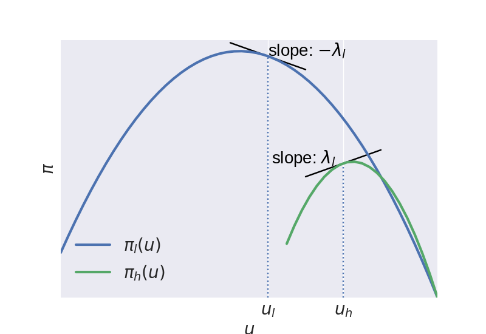
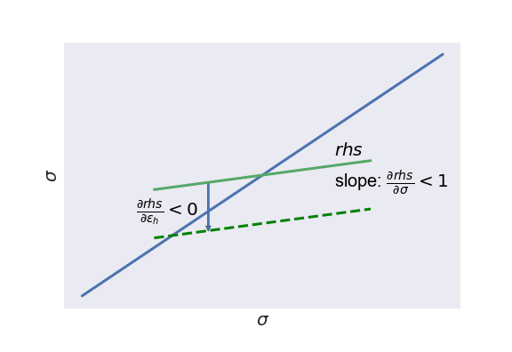

Pricing above value: selling to an adverse selection market
Table of Contents
This paper shows that it is possible for intermediate goods to be priced above the value that the good has for final consumers. This happens in sectors selling to markets with adverse selection problems, where the cost difference between consumer types is dominated by their elasticity difference. High input prices then help to separate consumer types and reduce information rents. We use the example of pharmaceutical companies selling drugs to a health insurance market at prices exceeding value. Another feature of the model is an excessive private incentive to reduce market size, e.g. in the form of personalized medicine.
Keywords: adverse selection, pricing above value, vertical relations, pharmaceutical prices, risk equalization
JEL codes: I13, I11
1 Introduction
Consider a value chain where firms in an upstream market \(U\) sell inputs to firms in a downstream market \(D\) and the latter sell to final consumers. When considering the input prices set by firms in \(U\), there are a number of common sense results: 1. do not set the input price above the final consumers' valuation of your input; 2. try to innovate to make your product attractive to a bigger group of final consumers and 3. reduce your price as the downstream market becomes more competitive.
However, when \(U\) sells to a market \(D\) with adverse selection problems, these three results do not necessarily hold. If the cost difference between consumer types in market \(D\) is dominated by their elasticity difference, it is optimal for \(U\) to set prices above final consumers' valuation of the input. Limiting the types of final consumers that value your product raises profits. And input prices increase with the competition intensity in downstream market segments.1 Further, policies to combat adverse selection, like risk adjustment/equalization, at the margin raise input prices.
An interesting market to apply this framework to is the health insurance market (\(D\)) where pharmaceutical companies in market \(U\) sell drugs to insurers to be included in their insurance contracts. Health insurance markets are known for their adverse selection problems and almost daily there are stories in the news about pharmaceutical companies charging "outrageous" prices for their treatments.2 Howard2015 document price developments in the market for anticancer drugs. Although it is hard to put a value on an additional year of life to see whether prices are above treatment value, they argue (pp. 149) that "in 1995 patients and their insurers paid $54,100 for a year of life. A decade later, 2005, they paid $139,100 for the same benefit. By 2013, they were paying $207,000." Most regulators in the world use less than $200k as the monetary value of a life year and indeed cavalli-2013-appeal-to states that at the World Oncology Forum the "prevailing opinion was that … the cost of the new generation of drugs is getting out of all proportion to the added benefit." Further, Howard2015 note that "launch prices of new anticancer drugs and other drugs in the so-called 'specialty' pharmaceutical market have been increasing over time" (pp. 140).
One explanation why health insurance covers treatments that are (too) expensive is that in public healthcare systems politicians tend to find it hard to refuse reimbursement on the basis of price. A classic example is the coverage of proton beam therapy in the NHS before any cost-benefit analysis was done: "proton beam therapy has not been the subject of a technology appraisal by the National Institute for Health and Clinical Excellence" and at the time there was no "reliable, objective evidence that proton beam treatment improved clinical outcomes" Hawkese2627. Economists have compared proton beam therapy to the death star Langreth2012. Surely, profit maximizing insurers will not cover treatments that are more expensive than their value added compared to existing treatments?
We analyze this with our framework where pharmaceutical companies sell to an insurance market that has adverse selection problems. We identify arguments why in private/market systems pharmaceutical prices have been increasing over time and can exceed the value of the treatment, in particular in 'specialty' niche markets.
Howard2015 discuss a number of explanations for high drug prices that are found in the literature. However, these cannot fully explain why prices are so high. To illustrate, an explanation that is often mentioned is that with health insurance people want a treatment, no matter what the cost since the insurer pays (most of) the price. This is true ex post: once I have insurance, the effects of the cost of treatment are reduced for me. Economists tend to refer to this as moral hazard. However, why would I buy insurance coverage for a treatment that costs more than the benefit it provides? Dropping such a treatment from the contract leads to a bigger reduction in the premium than the loss in expected utility. Hence, an insurer –whether or not it has market power– benefits from removing such treatments from its insurance contract. This threat of not being covered by an insurance contract limits the price a pharmaceutical company can ask for patented drugs. In free market systems, the insurer can decide what to cover or not in its contracts. In regulated market systems, like the Netherlands, the government prescribes which conditions need to be covered by basic insurance but does not define which treatments need to be covered.
Further, why does the problem seem more prevalent, the smaller the market is; like the specialty market and personalized or precision medicine? The promise of precision medicine was "to give 'the right drug to the right patient' to maximize the effectiveness and safety of the treatment" Garattini2015. This is done by targeting treatments on subgroups of patients, instead of finding a treatment for everyone suffering from the same disease. However, up till now this targeting of treatments has not lived up to this promise and one reason is that these treatments turn out to be extremely expensive. It is not clear that we can afford precision medicine; see Doble2016 for a discussion in the case of oncology with examples of treatments costing $300,000 while they "only result in minimal benefit". Garrison2017 discussing pricing in personalized healthcare mention the high sunk costs of R&D to explain high prices. Although high fixed/sunk costs can explain high prices in competitive markets (by limiting entry), this mechanism is not obvious for a monopoly market where a firm is protected by a patent. Since a monopolist tries to appropriate most or all of the surplus from its customers, its sunk fixed costs are not directly relevant for setting prices.
Also, explanations based on institutional details like reference pricing and regulation fixing dispensing physicians' margins Danzon2010 can explain cross section variation in prices but not prices exceeding value. If the price of a treatment exceeds its value, an insurer should simply drop the treatment from coverage.
We propose a set-up with upstream pharmaceutical companies selling drugs to downstream insurers for inclusion in their health insurance contracts. The health insurance market suffers from adverse selection, which we model with two consumer types. The condition we need for our results is that low risk types try to mimic high risk types. This can, for instance, happen if types differ on two dimensions –expected costs and demand elasticity– and high risk types have more elastic demand functions than low risk types. In particular, a low risk type mimics a high risk type if their elasticity difference exceeds the cost difference. In this case, insurance coverage of upstream drugs helps to separate downstream types and reduce the low type's information rent. This allows pharmaceutical firms to charge prices in excess of their treatments' value for patients and still have their treatments covered by insurance. In other words, to reduce rents the high type's allocation is distorted upwards by covering a treatment that is (too) expensive. Any change that makes the low type's incentive compatibility constraint "more binding" makes covering this treatment more attractive and increases the excess profits that upstream firms can earn. We denote these excess profits –i.e. profits in excess of treatment value– supra profits.
We show that supra profits are increasing in the competitiveness of the high type market. For instance, risk adjustment makes the high type market more attractive for insurers. With risk adjustment insurers compete more aggressively in the high type market which makes the high type's contract more attractive for low risk customers and increases the shadow price of the low type's incentive compatibility constraint. Hence upstream supra profits increase. Further, targeting of pharmaceutical R&D investments on subgroups of high types tends to increase supra profits as well. In this way, precision medicine tends to push up prices beyond their treatment value. We derive conditions under which such targeting of R&D is privately profitable –even though it reduces the pharmaceutical company's market share– and socially wasteful. Finally, we show that the introduction of generic drugs can help to increase prices of patented drugs.
The main assumption we need is that low types want to mimic high types. We provide two rationales for this assumption. First, in the main model the high type market segment is more competitive than the low type segment in the insurance market. In our health insurance context this implies that high risk individuals are more sensitive to value differences between insurance contracts than low risk types. There are a number of reasons why this is the case. Parente2004 find that the insurance premium elasticity is substantially higher for employees with a chronic condition than without.
A second intuition is that high risk types tend to have lower incomes and therefore pay more attention to value differences between plans.3 hogan2017 find that consumers' insurer switching probability falls with income. Also Atherly2004, Auerbach2006 and SALTZMAN2019197 find that people on low income are more price sensitive when choosing health insurance. This is in line with Royalty99 where the higher educated and the wealthier are less price sensitive.
Further, high risk types are more likely to have experience with healthcare and therefore know more about quality differences between treatments. As they are better informed, they are more sensitive to quality differences between plans NBERw19800.
There are also papers suggesting that people with lower health status tend to be less price elastic when choosing insurance. A number of these papers are based on age as an indicator of health status: older people tend to have lower health status STROMBOM200289,Royalty99. But Costa_2003 find no difference in elasticity between age groups. Also within the STROMBOM200289 paper this result is not robust in the sense that their direct measure of health status (based on previous hospitalizations instead of age) does not show a significant difference in price elasticity. Moreover, as pointed out by BEAULIEU200243, another reason for the lower price elasticity is that older people and people with low health status tend to be better informed about the quality of the different health plans and the treatments they cover. This can explain why they react less to price changes and to plan quality information published by the government or an employer. In empirical studies it is hard to control for this type of information advantage for subgroups, especially if relevant information is not easily captured by observable variables.
Next to differences in competitiveness, a second rationale why low risk types mimic high risk types is a lack of information/rationality. For example, handel-2015-healt-insur-human document that low risk types buy the contract with low out-of-pocket expenditures (targeted at high risk types) because they (incorrectly) believe this contract is more generous than it actually is, e.g. because they believe it covers more treatments and a wider network of providers. Below we show how this lack of rationality/information strengthens our results.
Our model has the following policy implications. Because supra profits are caused by adverse selection, removing or reducing selection effects tends to reduce treatment prices. One way to do this is to allow for risk selection by private insurers (liberalizing the insurance market by dropping a community rating requirement) but this works only if insurers can contract on enough information to avoid mimicking. Risk adjustment can also be used to reduce selection effects. However, as shown below, marginally improving risk adjustment can actually lead to higher treatment prices. A major reform of risk adjustment is needed to reduce treatment prices. Moreover, as found in bijlsma2014, if types differ both in costs and in elasticities, risk adjustment that perfectly compensates cost differences is not welfare maximizing. The elasticity difference needs to be incorporated in the risk equalization payments, as well.
Our analysis is related to the following strands of literature. First, our focus on a binding incentive compatibility constraint for low types is in line with the countervailing incentives literature LEWIS1989294. This literature considers type dependent outside options, which we generate through differing demand elasticities for different types. Although we use health insurance and adverse selection to illustrate our model, the mechanism applies in any screening model where the incentive compatibility constraint is binding for the low type. It is then optimal to distort the high type's allocation upward laf02. One way to get the upward distortion is to add a feature to the allocation at a price that exceeds the feature's value. BooneS13 and references therein consider adverse selection markets with a violation of single crossing. There it also happens that the incentive compatibility constraint of the low risk type is binding. These papers then analyze the equilibrium outcomes and the welfare properties of the equilibria, but not the effect on price and innovation incentives in an upstream market.
Our finding that marginally improving risk adjustment can reduce welfare is in line with weyl2017. In their model this happens when risk adjustment increases marginal costs at the marginal consumer. In our model, risk adjustment increases the difference between the types' elasticities compared to their cost difference which makes the incentive compatibility constraint "more binding". Patented drugs' role in reducing information rents increases, which tends to raise drug prices and supra profits.
Finally, pricing above value can happen in an industrial organization context where there are negative externalities. In the context of R&D, this externality can be the business stealing effect. An early analysis of how an R&D lab can extract more than the social value of an innovation is KatzShapiro1986. They focus on the licensing mechanism that can be used to extract the maximum profit out of an innovation. This literature on auction mechanisms to maximize revenue in the context of a negative externality was further developed by jehiel1996. Papers in this literature do not consider innovation incentives for firms selling to an adverse selection market.
Our paper is organized as follows. First, we illustrate our main effect in a simple insurer monopoly model. Then we present our general framework with competing insurers. We argue that supra profits appear when the elasticity/competition difference between the segments of the two risk types exceeds their expected cost difference. We use a Hotelling competition model to illustrate that parameter values exist under which this happens. Then we present our results in a general framework. We discuss the effects of bounded rationality and conclude with a discussion of policy implications.
2 Simple example
To see how it is possible at all that an insurer pays more for a treatment than the treatment's value to the insured, consider the following simple example with two treatments and a monopolist insurer. The example introduces the notation and illustrates the mechanics of the result: the high type's allocation is distorted upwards to reduce the low type's information rent.
Denote the two treatments 1 and 2; both treatments are produced at marginal costs normalized to zero: \(c_1 = c_2 =0\). Treatment 1 is under patent while 2 is off patent and sold by competing firms at a price equal to marginal costs. The values of these treatments are given by \(v_1,v_2\) resp. and are the same for each patient. Value \(v_i\) captures things like life years gained, improvement in quality of life, increased productivity etc. Garrison2017. Although it is not straightforward to measure this in practice, conceptually the value of a treatment is well defined. We aim to show that pharmaceutical companies can profitably charge a price in excess of this value and still be covered by insurance plans.
The monopolist insurer sells insurance at a premium \(\sigma\) and faces a customer who can be either of type \(l\) (probability \(\phi\)) or type \(h\) (probability \(1-\phi\)). Type \(k=l,h\) needs treatments 1,2 with probability \(\psi_{1k},\psi_{2k}\). We assume single crossing: \(\psi_{ih} \geq \psi_{il}\) for \(i=1,2\) and to simplify notation in this example assume that \(\psi_{2h} = \psi_{2l} = \psi_2\). Hence, the high risk consumer has a strictly higher probability of needing treatment 1: \(\psi_{1h}>\psi_{il}\).
We assume that the consumer buys insurance to get access to the treatment(s). That is, without insurance, the consumer goes without treatment.4 It is well documented that people without health insurance tend to forgo treatment as they have difficulty financing it. These access issues have been stressed both in the popular press Cohn07 and in academic journals Nyman1999141,Schoen2008,Schoen2010a. Many governments are concerned about health consumption inequality caused by income differences and design policies to make healthcare accessible to low income families Schokkaert2011o. In terms of modeling, risk aversion would complicate the expressions for utility (by introducing a non-linearity) without adding insight.
The insurer offers two contracts (which can be identical in case of a pooling outcome), each contract aimed at a consumer type. We write the value/utility of the contract for type \(k=1,2\) as follows:
\begin{equation} \label{eq:5} u_{k} = \alpha \psi_{1k} x_{1k} v_1 + \psi_{2} x_{2k} v_2 - \sigma_k \end{equation}where \(x_{ik} \in [0,1]\) denotes the probability that treatment \(i\) is covered by contract \(k\) and \(\sigma_k\) denotes the price/premium of contract \(k\). Value \(v_i\) denotes the utility of receiving the treatment in case the consumer needs it (with probability \(\psi_{ik}\)) compared to not receiving this treatment. Note that falling ill in itself can cause a disutility for the individual. Taking this into account would add a constant to the expression in \eqref{eq:5} which we leave out to ease notation.
The use of \(\alpha \in [0,1]\) is a "technical trick". Strictly speaking, it denotes the probability that treatment 1 is available to the insurer.5 We think of \(\alpha\) as being equal to one throughout the paper; but can deduce the value of treatment 1 for the insurer by considering the effect on the insurer's profits of a small decrease in \(\alpha\). This gives us the convenience of differentiating instead of taking the discrete difference between profits with (\(\alpha=1\)) and without (\(\alpha=0\)) treatment 1 being covered. In particular, to understand how \(p_1 > v_1\) is possible, we will derive conditions under which the insurer's profits are strictly increasing in \(\alpha\) even if \(p_1 = v_1\).
The incentive compatibility (IC) constraints for these contracts can be written as follows.
\begin{eqnarray} \label{eq:2} u_h &\geq& \alpha \psi_{1h} x_{1l} v_1 + \psi_{2} x_{2l} v_2 - \sigma_{l} \\ \label{eq:4} u_l &\geq& \alpha \psi_{1l} x_{1h} v_1 + \psi_{2} x_{2h} v_2 - \sigma_h \end{eqnarray}That is, \(IC_h\) implies that the high type is better off choosing the high contract (yielding utility \(u_h\)) than to buy the low type's contract (which yields her utility equal to the right hand side of \eqref{eq:2}). And, similarly, \(IC_l\) implies that the low type is better off buying the \(l\) contract –yielding \(u_l\) – than buying the \(h\) contract which yields her utility equal to the right hand side of \eqref{eq:4}.
The individual rationality (IR) constraints make sure that each type is better off buying a contract than not buying a contract at all; the constraints \(IR_h, IR_l\) can be written as:
\begin{eqnarray} \label{eq:2IR} u_h &\geq& \bar u_h \\ \label{eq:4IR} u_l &\geq& \bar u_l \end{eqnarray}where \(\bar u_k\) denotes the utility of type \(k\)'s outside option of not buying insurance at all. In the main model below, \(\bar u_k\) is endogenized by the outside option of buying from a competing insurer. Here we simply assume that the values \(\bar u_h, \bar u_l\) are exogenously given.
As we just want to show that \(p_1 > v_1\) is possible, we simply assume that \(IC_l\) and \(IR_h\) are binding as is done in the literature on countervailing incentives LEWIS1989294. Below we derive this as an equilibrium outcome in a model where insurers compete.6
Then by combining \eqref{eq:5} and \eqref{eq:4}, we write \(IC_l\) as
\begin{equation} \label{eq:6} u_l \geq \bar u_h - \alpha v_1 x_{1h} (\psi_{1h}-\psi_{1l}) \end{equation}We write the premium as
\begin{equation} \label{eq:7} \sigma_k = \alpha \psi_{1k} x_{1k} v_1 + \psi_2 x_{2k} v_2 - u_k \end{equation}Further, treatment 1 is bought from its producer at price \(p_1\) and for treatment 2 we assumed that competition leads to marginal cost pricing, \(p_2=0\). Hence the monopoly insurer's profit can be written as
\begin{eqnarray} \label{eq:8} \Pi &=& \phi (\alpha \psi_{1l}x_{1l}(v_1-p_1)+\psi_2 x_{2l}v_2 - u_l) \\ \nonumber &+& (1-\phi) (\alpha \psi_{1h} x_{1h}(v_1-p_1) + \psi_2 x_{2h} v_2 - \bar u_h) \\ \nonumber &+& \lambda_l(u_l - \bar u_h + \alpha v_1 x_{1h}(\psi_{1h}-\psi_{1l})) \end{eqnarray}where \(\lambda_l\) denotes the Lagrange multiplier on the \(IC_l\) constraint. Profits consist of share of low [high] types \(\phi [1-\phi]\) multiplied by the difference between the premium \(\sigma\) and the expected cost of the contract \(\alpha \psi_{1l} x_{1l} p_1 [\alpha \psi_{1h} x_{1h} p_1 ]\) From this it is straightforward to derive that
\begin{equation} \label{eq:9} \left. \frac{d\Pi}{dx_{1h}} \right|_{p_1=v_1} = \alpha \lambda_l v_1 (\psi_{1h}-\psi_{1l}) > 0 \end{equation}as \(\psi_{1h}>\psi_{1l}\). It follows that \(x_{1h} =1\) and we find that
\begin{equation} \label{eq:10} \left. \frac{d\Pi}{d \alpha} \right|_{p_1=v_1} = \lambda_l v_1 (\psi_{1h}-\psi_{1l}) > 0 \end{equation}In words, even if \(p_1=v_1\), the insurer's profits are strictly increasing in \(\alpha\). This implies that the producer of treatment 1 can ask more than \(p_1 = v_1\), final consumers' valuation of the treatment, and the insurer will still cover this treatment in its health insurance contract. For our purposes here, there is no need to characterize the solution further.
The reason why the insurer is willing to cover a treatment which is sold at a price in excess of its value to consumers is that the treatment helps to reduce the low type's information rent. In other words, the treatment has a value for the insurer in addition to the utility created by the treatment for the insured. Covering the treatment relaxes the \(IC_l\) constraint. The value of relaxing \(IC_l\) is given by its shadow price \(\lambda_l > 0\). Since the \(h\) type is more likely to need the treatment than the \(l\) type, covering the treatment makes the \(h\) contract less attractive to the \(l\) type. This allows the insurer to increase \(\sigma_l\) and profits.
Note the role of generic drugs, here captured by treatment 2, being sold at a price below their value (\(p_2 < v_2\)). Generic drugs are needed for our argument to "create space" for patented firms to charge prices above their treatments' values. To see this, consider the case where \(p_2=v_2\) and the outside option is normalized to \(\bar u_k = 0\). Then the IR constraint is of the form \(\alpha \psi_{1k} x_{1k} v_1 + \psi_{2k}x_{2k}v_2 - \sigma_k \geq 0\). Insurers charge a price that (at least) covers their costs: \(\sigma_k \geq \alpha \psi_{1k} x_{1k} p_1 + \psi_{2k} x_{2k} v_2\). Thus we find \(p_1 \leq v_1\) in case \(p_2 \geq v_2\). Without (generic) drugs being sold at a price below value we cannot have \(p_1 > v_1\).7
Next we introduce our general framework to analyze the effects of insurer competition and to endogenize that \(IC_l\) is binding. We will see that price exceeding value can happen in both pooling and separating equilibria.
3 Framework
Let \(P\) denote the set of treatments that are currently under patent and \(O\) the set of treatments where the patent has run out ("open" as in open source). To simplify the exposition we assume that \(\psi_{il}<\psi_{ih}\) for each \(i \in P\).8 For \(j \in O\) we assume \(\psi_{jl} \leq \psi_{jh}\). This ensures that single crossing is satisfied in our set up.9
Insurers \(\iota \in \{a,b,c,...,n\}\) offer contracts \(((x_{il}^{\iota},x_{jl}^{\iota},\sigma_l^{\iota})_{i \in P, j \in O},(x_{ih}^{\iota},x_{jh}^{\iota},\sigma_h^{\iota})_{i \in P, j \in O})\), where the first contract is intended for type \(l\) and the second for \(h\). A contract specifies the probability \(x \in [0,1]\) (below we have that \(x\) is either 0 or 1, except when explicitly mentioned) that a treatment is covered and a premium \(\sigma\).
Then the utility for type \(k=l,h\) of buying the contract meant for \(k\) is given by
\begin{equation} \label{eq:11} u_k = \sum_{i \in P} \alpha_i \psi_{ik} x_{ik} v_i + \sum_{j \in O} \psi_{jk} x_{jk} v_j - \sigma_k \end{equation}where we drop the \(\iota\) superscript to ease notation. Utility consists of the probability that consumer \(k\) needs the treatment \(\psi_{ik} [\psi_{jk}]\) multiplied by the probability that the treatment is covered by the contract \(\alpha_i x_{ik} [x_{jk}]\) times the value of the treatment \(v_i [v_j]\) minus the premium \(\sigma_k\). As above, \(\alpha_i \in [0,1]\) is a technical convenience to determine the value of treatment \(i\) for the insurer using differentiation. The assumption is that the agent cannot afford the treatments without insurance and hence \(v\) denotes the value of the treatment compared to the best affordable (i.e. without insurance) alternative treatment.
The incentive compatibility constraints can be written as
\begin{align} \label{eq:12} \tag{$IC_l$} u_l &\geq u_h - \sum_{i \in P} \alpha_i x_{ih} v_i (\psi_{ih}-\psi_{il}) - \sum_{j \in O} x_{jh} v_j (\psi_{jh}-\psi_{jl}) \\ \label{eq:12a} \tag{$IC_h$} u_h &\geq u_l + \sum_{i \in P} \alpha_i x_{il} v_i (\psi_{ih}-\psi_{il}) + \sum_{j \in O} x_{jl} v_j (\psi_{jh}-\psi_{jl}) \end{align}As we have insurer competition here, we assume that competition is intense enough that each type's IR constraint is satisfied (i.e. \(\sigma_k\) is low enough).
To simplify notation, we assume that treatments in the set \(O\) are sold under Bertrand competition with price equal to marginal costs, which we normalize to zero: \(p_j = c_j =0\) for \(j \in O\). We use equation \eqref{eq:11} to write
\begin{equation} \label{eq:13} \sigma_k = \sum_{i \in P} \alpha_i \psi_{ik} x_{ik} v_i + \sum_{j \in O} \psi_{jk} x_{jk} v_j - u_k \end{equation}The marginal cost of contract \(k\) for the insurer is given by the expected costs of the contract where costs are determined by treatment prices.
\begin{equation} \label{eq:14} c_k = \sum_{i \in P} \alpha_i \psi_{ik} x_{ik} p_i \end{equation}As the price of \(j \in O\) treatments is normalized to 0, the expected cost of type \(k\) is given by the sum over all patented treatments of the probability that \(k\) will receive treatment times the price \(p_i\) of treatment. Insurer \(\iota\)'s profits can then be written as follows:
\begin{eqnarray} \nonumber \Pi^{\iota} &=& \phi q^{\iota}(u_l^{\iota},u_l^{-\iota},\theta_l) (\sum_{i \in P} \alpha_i \psi_{il} x_{il}^{\iota} (v_i-p_i) + \sum_{j \in O} \psi_{jl} x_{jl}^{\iota} v_j - u_l^{\iota}) \\ \nonumber &+& (1-\phi) q^{\iota}(u_h^{\iota},u_h^{-\iota},\theta_h) (\sum_{i \in P} \alpha_i \psi_{ih} x_{ih}^{\iota} (v_i-p_i) + \sum_{j \in O} \psi_{jh} x_{jh}^{\iota} v_j - u_h^{\iota}) \\ \label{eq:15} &+& \lambda_l (u_l^{\iota} - u_h^{\iota} + \sum_{i \in P} \alpha_i x_{ih}^{\iota} v_i (\psi_{ih}-\psi_{il}) + \sum_{j \in O} x_{jh}^{\iota} v_j (\psi_{jh}-\psi_{jl})) \\ \nonumber &+& \lambda_h (u_h^{\iota} - u_l^{\iota} - \sum_{i \in P} \alpha_i x_{il}^{\iota} v_i (\psi_{ih}-\psi_{il}) - \sum_{j \in O} x_{jl}^{\iota} v_j (\psi_{jh}-\psi_{jl})) \end{eqnarray}where \(q^{\iota}(u_k^{\iota},u_k^{-\iota},\theta_k)\) denotes the market share of the insurer's contract on the \(k=l,h\) market as a function of \(\iota\)'s own utility offered \(u_k^{\iota}\), the utilities offered by \(\iota\)'s competitors \(u_k^{-\iota}\) and of factors \(\theta_k\) affecting the demand elasticity like the competition intensity on this market. We denote the Lagrange multiplier on constraint (\(IC_k\)) by \(\lambda_k\). We assume that \(q^{\iota}\) is increasing and concave in \(\iota\)'s offered utility and decreasing in the utility levels offered by \(\iota\)'s competitors.
An insurer maximizes profits over coverage and utility (i.e. the premium): \(x_{ik},x_{jk},u_k\) for \(i \in P, j \in O, k \in \{l,h\}\). We can already see the following properties of the solution.
Assume \(p_i = v_i\) and \(\alpha_i \in \langle 0,1]\) for \(i \in P\), then we have:
- \(\lambda_h>0\) implies \(x_{il}=0\);
- it cannot be the case that both \(IC\) constraints bind;
- \(\lambda_{l}>0\) implies that \(\lambda_h=0\) and \(x_{ih}=x_{jh}=x_{jl}=1\) and \(x_{il} \in [0,1]\).
Finally, \(p_i >v_i\) implies \(x_{il} =0\).

Figure 1: Insurer \(a\)'s profits \(\pi(u^a,\theta_l),\pi(u^a,\theta_h)\) as a function of \(u^a\).
If \eqref{eq:12a} is binding, coverage for the low type is distorted downwards. This is the distortion in a standard insurance model where types only differ in costs rot76. However, we focus on the opposite case with \(\lambda_l > \lambda_h = 0\). Because single crossing is satisfied in our model, it cannot be the case that each type wants to mimic the other type; hence only one \(IC\) constraint is binding. With \(p_i \leq v_i, p_j \leq v_j\), both contracts can cover all treatments. But \(p_i > v_i\) implies that the low type's contract does not cover treatment \(i\). For the low type the treatment price cannot exceed value. This can be seen as follows: \(\lambda_h =0\) implies that \(\partial \Pi/\partial x_{il}=\phi q \alpha_i \psi_{il} (v_i-p_i) < 0\) for \(p_i > v_i\). Hence, optimal \(x_{il}=0\) in this case. Intuitively, \(l\) consumers do not want to pay more for treatment \(i\) than it is worth and \(x_{il}\) does not help the insurer to separate consumer types. With \(\lambda_h = 0\) no one tries to mimic \(l\). Thus the insurer implements the first best outcome: do not cover a treatment with a price above its value. But \(x_{ih}=1\) is possible in case \(p_i > v_i\), as we will see below.
We focus on the case where \eqref{eq:12} is binding, while \eqref{eq:12a} is not. We show in Section 4 that such a case indeed exists in a model with Hotelling competition. Figure 1 illustrates how this can happen.10 As illustrated in the figure, the \(l\) market is more profitable than the \(h\) market in that profits on the \(l\) market exceed \(h\) profits over the relevant range of \(u\). This is intuitive since \(l\) customers are cheaper in expectation than \(h\) types. In addition, for the insurer to attract customers on the \(h\) market, a larger utility level needs to be left to its customers than on the \(l\) market. This can be due to the fact that \(h\) customers have more experience with treatments and are better able to compare the values offered by different insurance plans. Or \(h\) types (high risk/low health status) tend to have low income and hence pay a relatively low premium \(\sigma_h\) leading to high \(u_h\). Hence, the profit maximizing level of \(u_h\) exceeds that of \(u_l\). But the utility left to \(h\) customers cannot be too high, because this would induce \(l\) customers to buy the \(h\) contract.11 The inequality in the figure is \(IC_l\) in the form of equation \eqref{eq:6} with \(\alpha=x_{1h}=1\).
In the figure, \(u_l\) denotes the symmetric equilibrium outcome on the \(l\) market and \(u_h\) on the \(h\) market. The former is chosen higher than its profit maximizing level and the latter lower, if one would consider each market in isolation. This is caused by the constraint that the difference between \(u_h\) and \(u_l\) cannot be too big. If this difference would exceed \(v_1 (\psi_{1h}-\psi_{1l})\), the contracts would no longer be incentive compatible and everyone would buy the \(h\) contract. The first order conditions for \(u_h,u_l\) show that the marginal profits \(\partial \pi/\partial u_k^a\) on each market should be equal (in absolute value) and equal to \(\lambda_l\). At the margin, the loss in profits of not being able to lower \(u_l\) equals the loss of not being able to increase \(u_h\).
4 Competition example
Above we work in a framework with elastic demand on two market segments and \(IC\) constraints on both segments. We focus on the case where the \(IC\) constraint of the low type is binding (\(\lambda_l>0\)). This section presents a health insurance model where demand elasticities differ on the market segments due to differences in travel costs and income. We present example parameter values such that indeed \(IC_l\) is binding and \(IC_h\) is slack.
Consider (only) two treatments. Treatment 1 is under patent, treatment 2 is not. We focus on \(p_1=v_1\) and \(p_2=c_2=0\). Further, \(\psi_{2l}=\psi_{2h}=\psi_2\). To interpret demand elasticities below, we introduce a simple way to capture income effects which we explain and motivate below. If insurance contract \(k\) from insurer \(a\) gives utility \(u_k^a\), then an insured's utility is given by
\begin{equation} \label{eq:50} (y_k+u_k^a)^{\eta} \end{equation}with \(y_k>0, \eta \in \langle 0,1]\). There are two insurers competing on a Hotelling beach of length 1 with consumers distributed uniformly along the beach. Insurer \(a\) is on the left hand side of the beach and insurer \(b\) on the right hand side. A fraction \(\phi\) of consumers (on each location) is type \(l\) and a fraction \(1-\phi\) is \(h\). The travel cost over the Hotelling beach for type \(k\) is denoted by \(t_k, k=l,h\). If insurer \(a\) offers utility \(u_k^a\) and insurer \(b\) offers \(u_k^b\), then \(a\)'s market share \(q_k\) is given by the indifferent consumer at position \(q_k \in [0,1]\) on the \(k\) market:
\begin{equation} \label{eq:18} (y_k+u_k^a)^{\eta} - t_k q_k = (y_k+u_k^b)^{\eta} - t_k (1-q_k) \end{equation}For the indifferent consumer the utility from buying from \(a\) minus the travel cost to \(a\) equals the utility from \(b\) minus the travel cost to \(b\). Hence, \(a\)'s market share can be written as
\begin{equation} \label{eq:19} q_k = \frac{1}{2} + \frac{(y_k+u_k^a)^{\eta} - (y_k+u_k^b)^{\eta}}{2t_k} \end{equation}Then we can define type \(k\)'s demand elasticity as
\begin{equation} \label{eq:51} \varepsilon_k = \left| \frac{\partial q_k}{\partial \sigma_k^a} \frac{\sigma_k^a}{q_k} \right| = \frac{\eta}{t_k}\frac{\sigma_k}{(y_k+u_k)^{1-\eta}} \end{equation}in symmetric equilibrium with \(u_k^a=u_k^b=u_k,\sigma_k^a=\sigma_k^{b}=\sigma_k\).
Before interpreting these results, let us motivate the functional forms used. The Hotelling model of competition is fairly standard Tirole. It allows us to model competition with inelastic market demand but elastic demand for the firm. The inelastic demand is useful here for two reasons. First, it is easy to combine it with IC constraints for the two customer types. Second, it is straightforward to compare the value of the treatment \(v_i\) with the price of the treatment \(p_i\) charged by the manufacturer. If consumers have differing values for \(v_i\) (elastic demand), it is not clear to which value \(v\) the price \(p_i\) should be compared to claim that pricing is excessive (the average \(v_{i}\), the median or maximum \(v_i\)?). With this set-up we can transparently make the claim that pricing is excessive in the sense that the price exceeds the treatment's value for each customer.
If both insurers offer the same utility level, \(a\)'s market share equals \(1/2\). If \(u^a_k > u^b_k\), \(a\) is relatively more attractive and its market share exceeds \(1/2\). The pace at which \(a\)'s market share increases with the difference between \(u_k^a\) and \(u_k^b\) is determined by travel cost \(t_k\) and parameter \(\eta\). The lower \(t_k\), the more market share responds to utility differences offered by insurers and the more competitive the market is.
A similar logic is used when choosing the parameterization in equation \eqref{eq:50}. Because \(u_k^a\) enters linearly in this expression, we can use the standard IC constraints and compare \(v_i\) to the price \(p_i\) that the manufacturer charges. We interpret \(y_k\) as type \(k\)'s income that is spent on other goods and services. It acts to make overall utility less elastic as income increases in case \(\eta<1\). Someone with a low income is more sensitive to changes in, say, the insurance premium than someone with a high income hogan2017.
As equation \eqref{eq:51} shows, the demand elasticity of type \(k\) decreases with \(t_k\): the more competitive the Hotelling market (lower \(t_k\)), the more elastic is type \(k\)'s demand for insurer \(a\)'s contract. Lower \(y_k\) also leads to more elastic demand in case \(\eta<1\).
We finish the section with an example where indeed \(IC_l\) is binding. As the goal is to show that something is possible we simplify by assuming \(\eta=1,y_k=0\) for \(k=l,h\). We first assume that \(IC_h\) is slack (and check later that this assumption is correct; see the proof of lemma Hotelling_equilibrium. With \(p_1=v_1\) and only one treatment in each of the sets \(P,O\), we write equation \eqref{eq:15} as follows:
\begin{eqnarray} \nonumber \max_{u_l^a,u_h^a,x_{1h}^a,x_{2l}^a,x_{2h}^a} & \phi& \left(\frac{1}{2} + \frac{u_l^a-u_l^b}{2t_l} \right) (\psi_2 x_{2l}^a v_2 -u_l^a) \\ \label{eq:20} & +& (1-\phi) \left(\frac{1}{2} + \frac{u_h^a-u_h^b}{2t_h} \right) (\psi_2 x_{2h}^a v_2 -u_h^a) \\ \nonumber & +& \lambda_l (u_l^a - u_h^a + \alpha v_1 x_{1h}^a (\psi_{1h}-\psi_{1l})) \end{eqnarray}We derive the following equilibrium outcome.
In the Hotelling model, assume that \(p_1 =v_1\) and \(t_l - t_h > v_1 (\psi_{1h}-\psi_{1l})\). Then in equilibrium, it is the case that \(x_{1h}=x_{2h}=x_{2l}=1\), \(x_{1l} \in [0,1]\) and \begin{eqnarray} \label{eq:21} u_h &=& \psi_2 v_2 + \frac{\frac{\phi}{t_l}}{\frac{\phi}{t_l}+\frac{1-\phi}{t_h}}\alpha v_1 (\psi_{1h}-\psi_{1l})- \frac{1}{\frac{\phi}{t_l}+\frac{1-\phi}{t_h}} \\ \label{eq:21b} u_l &=& \psi_2 v_2 - \frac{\frac{1-\phi}{t_h}}{\frac{\phi}{t_l}+\frac{1-\phi}{t_h}}\alpha v_1 (\psi_{1h}-\psi_{1l})- \frac{1}{\frac{\phi}{t_l}+\frac{1-\phi}{t_h}} \\ \label{eq:21c} \lambda_{l} &=& \frac{1}{2} \frac{t_l-t_h-\alpha v_1 (\psi_{1h}-\psi_{1l})}{\frac{t_h}{1-\phi}+\frac{t_l}{\phi}} > 0 \\ \label{eq:21d} \left. \frac{d\Pi}{d\alpha}\right|_{p_1=v_1} &=& (\psi_{1h}-\psi_{1l}) v_1 \lambda_l > 0 \end{eqnarray}
The assumption in the lemma is that the \(h\) market is (sufficiently) more competitive than the \(l\) market (\(t_h < t_l\)). Under this assumption we derive the equilibrium utility levels for both types (offered by both firms). These utility levels can be understood as follows. With \(p_1=v_1\), the price of treatment 1 equals the utility it generates. Hence, its net utility for the insured equals zero. The utility generated by the insurance contract is due to the cheap (\(p_2 = c_2 \le v_2\)) treatment 2. A well known property of the Hotelling model is the following. If there would be only one agent type \(k\), utility would equal \(\psi_2 v_2 -t_k\). The higher \(t_k\) (the less competitive the market), the higher the premium and the lower utility would be. However, here we have two types and their markets are linked. Hence, we do not simply subtract \(t\) but the (weighted) harmonic mean of \(t_h,t_l\): \(1/(\phi/t_l+(1-\phi)/t_h)\). We do not need to require \(u_h=u_l\); we are allowed to differentiate \(u_h-u_l\geq 0\) as long as \(u_h-u_l \leq \alpha v_1 x(\psi_{1h}-\psi_{1l})\) to satisfy \((IC_l)\).
Hence, we increase \(u_h\) and we reduce \(u_l\) in a way that causes \((IC_l)\) to hold with equality. The relative weights of this increase, decrease resp. are determined by the market size and competition differences between the market segments. Finally, the shadow price \(\lambda_l\) of the (\(IC_l\)) constraint is positive under the assumptions that we made: the \(l\) type wants to mimic the \(h\) type who gets a relatively better deal as the \(h\) market is more competitive than the \(l\) market.
Even when treatment 1 is priced at its value (\(p_1=v_1\)), we find that a reduction in \(\alpha\) strictly reduces profits. With \(p_1=v_1\), the consumers are indifferent whether treatment 1 is covered or not. But a fall in \(\alpha\) strictly reduces insurers' profits. Hence, insurers are willing to pay more than \(p_1=v_1\) to have treatment 1 covered in their contracts. Treatment 1 generates value in excess of the utility of its treatment, \(v_1\). The intuition is that treatment 1 helps the insurers to reduce information rents. This is why it is so profitable to sell to an adverse selection market. In the proof of the lemma, we also solve the asymmetric case where \(\alpha^a< \alpha^b =1\): if firm 1 tries to increase the rents from selling its treatment, it can threaten insurer \(a\) to reduce its access to treatment 1 (\(\alpha^a <1\)) while competing with an insurer \(b\) that has full access to this treatment (\(\alpha^b =1\)). It turns out that the expressions are similar to the ones given above and they have the same properties. So here we focus on the simpler symmetric equations.
For reference below, the condition in the lemma can be written as \(t_l-t_h>c_h-c_l\) where the costs for the insurer of type \(k\) equals \(c_k = \psi_{1k} p_1= \psi_{1k}v_1\). That is, the difference in competition intensities between the two markets exceeds the difference in expected costs. What happens if the condition is not satisfied; that is, \(c_h -c_l \geq t_l-t_h\)? In this case, we can solve the insurer's problem \eqref{eq:20} without the \(IC_l\) constraint. It is routine to verify that this yields \(u_k = \psi_2 v_2-t_k\). Substituting this solution in the \(IC_l\) constraint shows that it is indeed satisfied. Hence, if the difference in competition intensities \(t_l,t_h\) is not big enough compared to the cost difference, the insurer sets a premium on the \(l\) contract that is so low (due to the low cost) that the \(l\) type does not want to mimic the \(h\) type and \(\lambda_l=0\). If the cost difference increases further, the \(h\) contract becomes so expensive that the high type wants to mimic the low type. This is the more traditional adverse selection problem rot76. Only when sufficient market power on the \(l\) market compensates for the lower \(c_l\), the \(h\) contract becomes attractive to the \(l\) type.
One of the questions in this paper is: how does this extra profit \(d\Pi/d\alpha|_{p_1=v_1}\) vary with competition? In our model, competition is inversely related to travel cost \(t\). Hence, in the notation of the previous section, we would define our variable capturing competition as \(\theta_k = 1/t_k\). As \eqref{eq:21d} illustrates, \(d\Pi/d\alpha\) increases in \(\lambda_l\).
In the Hotelling model, the multiplier \(\lambda_l\) is increasing in \(t_l\) and decreasing in \(t_h\).
As we assume that \(t_l > t_h\), increasing this difference in competition further, makes treatment 1 more desirable even if it is priced at value. An increase in \(t_l-t_h\) makes \((IC_l)\) "more binding" and hence raises the value of treatment 1 in reducing rents. We now return to the general model to show that this finding on competition is robust and to derive the effects of other variables.
5 Supra profits
We consider two contractual arrangements that lead to a profit for the patent holder that exceeds the value of its innovation; we call these extra rents "supra profits". First, we consider the innovator using a two-part tariff which captures most non-linear pricing schemes. Then we consider the case where the innovator can only use a linear fee (a price per unit).
5.1 two-part tariff
The easiest way to see the main effects of this paper is to assume that innovators sell treatments to insurers using two-part tariffs. It turns out that the intuitions we find here, carry over to the case of linear pricing.
To characterize the optimal prices set by innovator \(i\), we first derive the insurers' equilibrium response to the linear part \(p_i\) of the tariff. The insurers set a premium \(\sigma\) which can be different for the \(h\) and \(l\) markets. Or equivalently (see equation \eqref{eq:13}) insurers set utility levels \(u_l,u_h\).
The first order condition with respect to \(u_h\) can be written as:
\begin{align} \nonumber \lambda_l &= (1-\phi) \left(-q_h + (\sigma_h-c_h) \frac{\partial q_h}{\partial u_h} \right)\\ \nonumber &=- (1-\phi) q_h \left(1 + \frac{\sigma_h-c_h}{\sigma_h} \frac{\partial q_h}{\partial \sigma_h} \frac{\sigma_h}{q_{h}} \right)\\ \label{eq:26} & = (1-\phi) q_h (\mu_h \varepsilon_h-1) \end{align}where we use that \(\partial q_h/\partial u_h = - \partial q_h/\partial \sigma_h\), \(c_h\) is given by \eqref{eq:14} and the insurer's mark-up equals \(\mu_h = (\sigma_{h}-c_h)/\sigma_h\). As above, we define the elasticity of the \(h\) type with respect to the premium \(\sigma_h\) as \(\varepsilon_h = |\frac{\partial q_h}{\partial \sigma_h} \frac{\sigma_h}{q_{h}}|\). The reason why we write the first order condition like this is that we assume that \(\varepsilon_h\) and \(\varepsilon_l\) are (locally) constant when we do comparative statics.
We assume that \(\varepsilon_{h} > \varepsilon_{l}\). In terms of equation \eqref{eq:51}, one can think of two reasons why this is the case. First, high risk agents are likely to have experienced more care in the past and hence understand better what the different insurance contracts offer. This makes it easier for them to compare the insurance contracts; this can be captured by \(t_l \le t_h\) in equation \eqref{eq:51}. Second, if \(h\) agents with low health status tend to earn a lower income, they may have a higher incentive than \(l\) agents to find the better deal; this is captured by \(y_l>y_h\).
The first order condition for \(u_l\) can then be written as:
\begin{equation} \label{eq:36} -\lambda_l = \phi q_l (\mu_l \varepsilon_l -1) \end{equation}where \(\mu_l=(\sigma_l-c_l)/\sigma_l\).
In symmetric equilibrium (\(q_l=q_h=1/n\) where \(n\) denotes the number of insurers) adding the first order conditions for \(u_h\) and \(u_l\), we find that
\begin{equation} \label{eq:28} \phi (\mu_l \varepsilon_l-1) + (1-\phi) (\mu_h \varepsilon_h -1) = 0 \end{equation}If both markets would be served independently (i.e. without being linked via an IC constraint), the insurer would set its price cost margin equal to \(\mu = 1/\varepsilon\); the well known Lerner expression for a profit maximizing mark-up. Because the markets are linked via \eqref{eq:12}, the weighted sum of these two terms equals zero. That is the mark-up is too high in one market (compared to \(\mu=1/\varepsilon\)) and this is compensated by a mark-up which is too low in the other market.
Here we consider the case where R&D firm \(i\) sets \(p_i=v_i\) and uses the fixed part of the tariff to appropriate the supra profits. Below, with linear pricing, we consider \(p_i>v_i\) which implies (lemma Baseline_results) that firm \(i\) loses the \(l\) market.
With \(p_i=v_i\), lemma Baseline_results implies that \(x_{ih}=x_{il}=x_{jh}=x_{jl}=1\). Hence, we have a pooling contract.12 Therefore, \(\mu_l\) and \(\mu_h\) in \eqref{eq:28} are based on the same premium \(\sigma\). Thus, we can solve for \(\sigma\). Since we have \(\sigma_l=\sigma_h=\sigma\), we have \(\mu_l > \mu_h\) because \(c_h>c_l\).
With \(p_i \leq v_i\), we find the following expressions for the premium and the mark-ups on the two markets: \begin{align} \label{eq:29} \sigma &= \frac{\phi \varepsilon_l c_l +(1-\phi) \varepsilon_h c_h }{\phi \varepsilon_l +(1-\phi) \varepsilon_h-1} \\ \label{eq:29a} \mu_h &= \frac{c_h -\phi \varepsilon_l (c_{h}-c_l)}{\phi \varepsilon_lc_l +(1-\phi) \varepsilon_h c_h} \\ \label{eq:29b} \mu_l &= \frac{c_l +(1-\phi) \varepsilon_h (c_{h}-c_l)}{\phi \varepsilon_lc_l +(1-\phi) \varepsilon_h c_h} \\ \label{eq:43} \lambda_l &= \frac{1}{n}\phi(1-\phi) \left( \frac{\varepsilon_h c_h (1-\varepsilon_l) - \varepsilon_l c_l (1-\varepsilon_h)}{\phi c_l\varepsilon_l + (1-\phi) c_h \varepsilon_h} \right) \end{align}
As a proxy of the supra profits that \(i\) can appropriate, consider
\begin{equation} \label{eq:1} \tau_i = \left. \frac{d\Pi_{\iota}}{d\alpha_{i}} \right|_{p_i=v_i} = \lambda_l v_i \Delta \psi_i \end{equation}at \(\alpha_i=1\). Even if treatment \(i\) is priced at consumer value \(p_i = v_i\), reducing \(\alpha_i\) still strictly reduces insurers' profits with \(\lambda_l > 0\). This part of the supra profits is captured using the fixed tariff \(t_i\). The level of \(t_i\) is directly related to \(\tau_i\).
The following assumption ensurers that we are in the relevant parameter space that allows for supra profits. First, we need that \eqref{eq:12} is binding: \(\lambda_l >0\). Further, for the insurers' optimization problem to be well defined, we need that the "average elasticity" on the two markets exceeds 1.13 Throughout this paper, we make the following assumptions such that both conditions are satisfied.
\begin{align} \label{eq:33} c_h \varepsilon_h (1- \varepsilon_l )-c_l \varepsilon_l(1-\varepsilon_h) > 0 \\ \label{eq:33a} \phi \varepsilon_l + (1-\phi) \varepsilon_h > 1 \end{align}
As the denominator of \eqref{eq:43} is positive, \(\lambda_l >0\) if and only if inequality \eqref{eq:33} holds. Equation \eqref{eq:33a} makes sure that \(\sigma\) in \eqref{eq:29} has a finite value. The following lemma derives two conditions under which \eqref{eq:33} is satisfied.
We find that \(\lambda_l >0\) if either
- \(\varepsilon_l \leq 1\)
- or
If \(\varepsilon_l \leq 1\) then \eqref{eq:33a} implies that \(\varepsilon_h > 1\). Insurers then want to set such a high price on the \(l\) market that \(IC_l\) binds. If \(\varepsilon_l > 1\), we have that \(\varepsilon_h > \varepsilon_l>1\). This implies that the fraction on the right hand side of \eqref{eq:34} is bigger than 0. Hence, there is a range of values for \(c_h>c_l\) for which \eqref{eq:34} is satisfied. For given \(c_h-c_l>0\), there exist \(\varepsilon_h\) big enough and \(\varepsilon_l>1\) small enough such that \eqref{eq:34} holds.
Note that the inequality on \(c_h-c_l\) is reminiscent of the condition in Lemma Hotelling_equilibrium: the difference in costs between the types is bounded by the difference in elasticities. Intuitively, if the cost difference is too big (compared to the difference in elasticities), the \(h\) contract will be too expensive to be attractive for the \(l\) type. \(IC_l\) is not binding in this case. If the cost difference is small, the higher elasticity on the \(h\) market reduces the mark-up on the \(h\) contract compared to the \(l\) contract to such an extent that the \(h\) contract is attractive to the \(l\) type: \(IC_l\) is binding.
The following lemma derives properties of insurance markets that tend to lead to high supra profits.
The shadow price \(\lambda_l\) on the low type's IC constraint is:
- increasing in \(\varepsilon_h\) and decreasing in \(\varepsilon_l\),
- decreasing in \(c_h\) and increasing in \(c_l\).
Recall that supra profits \(\tau_i\) are increasing in \(\lambda_l\). Hence, we find that supra profits are increasing in the difference between \(\varepsilon_h\) and \(\varepsilon_l\). The more competitive the \(h\) market becomes, compared to the \(l\) market, the lower the mark-up on the \(h\) contract compared to the \(l\) contract. This makes the \(h\) market more attractive to the \(l\) type and hence the latter's IC constraint "more binding". The role of treatment \(i\) in reducing rents increases, thereby increasing the profits that \(i\) can earn on top of charging \(p_i=v_i\).
The increase in the elasticity difference strengthens the selection effects in this market context. Taking away the selection effects, would remove the IC constraint and reduce supra profits. This would suggest that allowing insurers to risk rate can reduce their selection incentives if they have sufficiently informative signals to discriminate on consumers' risk types. Reducing selection incentives in this way can help to reduce supra profits.
In a market setting, it may not be obvious for a policy maker to affect elasticities and hence influence treatment prices. However, there is another instrument that makes insurers compete more fiercely on the \(h\) market which is often used: risk adjustment. Insurers are compensated for the high risk customers in their portfolio vandevenellis2000. Interestingly, we find that risk adjustment has the negative side effect of increasing treatment prices. Risk adjustment brings the costs \(c_h,c_l\) of the different types closer together which tends to be beneficial in standard adverse selection models. To illustrate, it helps from an equity point of view: lowering the costs of people with a low health status. However, once we take into account that there are upstream firms (treatment innovators) with market power (due to patents) who supply inputs to the health insurance industry, risk adjustment tends to increase treatment prices.
The intuition for this is as follows. As risk adjustment brings the costs of the types closer together, the \(h\) market becomes more attractive for insurers to compete on. Hence, the premium on the \(h\) market is competed down compared to the premium on the \(l\) market.14 This makes the \(h\) contract more attractive to the \(l\) type, \(IC_l\) becomes "more binding" and the role of treatment \(i\) in separating the types is strengthened. As a consequence, \(i\)'s supra profits increase.
As we discussed in the Introduction, prices for cancer treatments have increased over the past decades. It is possible that they increased more than treatment values. According to the result above, one factor contributing to this price increase is the improved risk adjustment in countries with privately run health insurance markets Schut2011o.
Another factor determining treatment prices is the (individual rationality) constraint \(u_k \geq 0\) where the outside option is normalized to 0. If drug prices increase to such an extent that \(u_k < 0\), consumers stop buying health insurance because the expected benefit is lower than the price (premium). The introduction of generic drugs in the past decades which –due to competition– are priced below value (\(p_j < v_j\)) creates the space for patented drugs to price above value and still the value of insurance is bigger than or equal to \(\sigma\).
The previous lemma compares the effects of different health insurance systems, e.g. differences between countries. Next, we compare –within a system– which treatments claim the highest supra profits.
Consider two treatments, 1 and 2; which treatment captures a higher supra profit compared to the value it offers? Equation \eqref{eq:1} implies
\begin{equation} \label{eq:42} \frac{\tau_1/v_1}{\tau_2/v_2} = \frac{\Delta \psi_1}{\Delta \psi_2} \end{equation}From this it follows immediately that:
Relative to other patented treatments in \(P\), the supra profit of treatment \(i\) increases in \(\Delta \psi_i\).
Hence drugs with a clear distinction between heavy users and a low probability for low risk people tend to earn high supra profits. One can think of two reasons why \(\Delta \psi_i\) is high for a treatment \(i\): the first is exogenous to the R&D lab and the second endogenous. First, it can be a matter of biology: some people suffer from diabetes and others do not.15 The difference between the prevalence of diabetes among high and low risk types determines \(\Delta \psi_i\) and firm \(i\) cannot change this.
Second, R&D lab \(i\) can invest in projects that are targeted at sub-populations of patients with a disease. Dugger2018 describe this as "a transition away from the production of 'one-size-fits-all' treatments towards targeted treatments". With precision or personalized medicine, the treatment takes the patient's underlying mechanism of the disease into account. Such targeted therapies require the co-development of diagnostic tools to identify the optimal treatment for individual patients. Biomarkers are used to define the subset of patients who benefit from the treatment. The use of biomarkers in clinical trials has increased substantially over time NBERc13994.
Advantages of precision medicine include faster development and smaller/cheaper trials because the drugs are targeted at smaller groups NBERc13994. Better clinical results for the sub-population of patients targeted by the treatment. Ideally, lower healthcare expenditure because of the cheaper development and the fact that the drugs are used for smaller groups. However, the last effect has not materialized as personalized medicine turns out to be very expensive.
Pharmaceutical companies need to select the most promising among the drug targets identified in early stages of research to pursue further Emmerich2021,Knowles2003. There are two margins along which they can decide to focus on targeted drugs. The extensive margin where they prioritize targeted projects above general projects. The intensive margin where they decide to narrow down a given project by investing in the discovery of (more) biomarkers. This decision is partly informed by science but there is an important role for marketing and financial directors Knowles2003.
Although biomarkers "divide the market of treatable patients into groups and clusters, thus reducing market share" jakka13_econom_persp_person_medic, this targeting can be profitable in its own right beyond the (socially) beneficial effects mentioned above. In particular, we show that this partitioning of the market is profitable even if no extra value is created by targeting the treatment. In this sense, there is an excessive incentive for pharmaceutical companies to target treatments with precision medicine.
To capture this idea of excessive targeting, we introduce a parameter \(\zeta\) with the properties that \(d\psi_{ih}/d\zeta <0\) and \(d\Delta \psi_i/d\zeta>0\). This we call "high type targeting". In words, innovator \(i\) focuses on a high type targeting strategy (lab \(i\) increases \(\zeta_i\)) if its treatment will be effective for only a subset of high types (\(d\psi_{ih}/d\zeta_i <0\)) but for an even smaller set of low types (\(d\Delta\psi_i/d\zeta_i>0\)). To illustrate, consider a disease with different strains. Focusing treatment \(i\) on a particular strain that is more prevalent under high than low types, leads to a fall in \(i\)'s market share under \(h\) types –as not all \(h\) types have this strain– and to an even bigger fall in market share under low types.
The corollary shows that a treatment which is more high type targeted leads to higher supra profits. This does not imply that targeting is necessarily a profitable strategy as it shrinks the market for the treatment. We come back to this below.
To the extent that the specialty pharmaceutical market and personalized medicine are examples of high type targeting, the corollary implies that they have contributed to the rise in treatment prices documented in the Introduction.
5.2 linear pricing and separation
Consider the case where the innovating firm cannot use a two-part tariff but only linear pricing. To capture the supra profits, firm \(i\) cannot use the fixed fee but has to set \(p_i > v_i\). We know from lemma Baseline_results that \(p_i>v_i\) implies \(x_{il}=0\): the insurer drops treatment \(i\) in the \(l\) contract. Hence, firm \(i\) weighs a higher price \(p_i\) against a smaller group of customers using the treatment.
The first order conditions for \(u_h,u_l\) are unchanged, hence equations \eqref{eq:26}, \eqref{eq:36} and \eqref{eq:28} remain valid here. However, in this case, \(x_{il}=0\) while \(x_{ih}=1\); thus, there is no pooling contract.
The following result characterizes the insurance premia charged on both market segments. The set \(E_h\) denotes the patented treatments that are exclusively available to \(h\) types: \(x_{ih}=1\) and \(x_{il}=0\) for all \(i \in E_h\).
Let \(\sigma=\sigma_l\). Then \(\sigma_h=\sigma+\Delta \sigma\) where \begin{equation} \label{eq:52} \Delta \sigma = \sum_{i \in E_h} \psi_{il} v_i \end{equation}
and \(\sigma\) is (implicitly) defined by
\begin{equation} \label{eq:37} \sigma = \frac{\phi \varepsilon_l c_l +(1-\phi) \varepsilon_h c_h \frac{\sigma}{\sigma + \Delta \sigma} }{\phi \varepsilon_l +(1-\phi) \varepsilon_h-1} \end{equation}Interestingly, the additional premium \(\Delta \sigma\) paid by the \(h\) type is not determined by the additional utility she gets from buying her own contract instead of the \(l\) contract. Because \(IC_l\) is binding, \(\Delta \sigma\) is driven by the extra utility the \(l\) type would get if she bought the \(h\) contract which is the only contract covering treatments \(E_h\). In particular, the coverage of \(E_h\) is the only difference in coverage between the two contracts. Hence, for \(l\) to be indifferent between the two contracts (i.e. binding \(IC_l\) constraint), the premium difference must equal the utility difference for \(l\). If \(l\) would buy the \(h\) contract, she would gain additional treatment value equal to \(\sum_{i \in E_h} \psi_{il} v_i\). Since \(\psi_{il}\) tends to be small, the effect of one treatment on the premium is small. But the set \(E_h\) can be quite big and people can over-estimate \(\psi_{il}\) as we discuss in the next section.
Note that with \(\Delta \sigma =0\), the expression in \eqref{eq:37} is identical to \eqref{eq:29}: if the set \(E_h\) is empty, we are back to a pooling contract. In the pooling setting above, we know that \(\mu_l>\mu_h\); the same is true here.
With \(\Delta \sigma > 0\), we find that \(\mu_l > \mu_h\).
There are two ways to understand this result. First, with \(\varepsilon_l < \varepsilon_h\), the insurer sets a higher margin on the \(l\) than on the \(h\) market. Because the \(IC_l\) constraint is binding, the margins are modified (from simple \(\mu=1/\varepsilon\)), but not to the extent that the inequality is reversed. Second, because \(\Delta \sigma\) is based on both \(v_i\) and \(\psi_{il}\), while \(c_h\) is based on \(p_i \geq v_i\) and \(\psi_{ih} > \psi_{il}\), the increase in premium \(\Delta \sigma\) is smaller than the increase in costs \(\Delta c = c_h - c_l\) with \(c_k = \sum_{i \in P} \psi_{ik} p_i\). Hence, the insurers make a lower margin on the \(h\) than on the \(l\) market.
Using the first order condition of profits \eqref{eq:15} with respect to \(x_{ih}\), we derive the expression for \(p_i>v_i\):
\begin{equation} \label{eq:55} \frac{1}{n}(1-\phi)\psi_{ih}(v_i-p_i) + \lambda_l v_i \Delta \psi_i = 0 \end{equation}This equation needs to hold with equality. If it would be negative, \(p_i\) is so high that the insurer drops \(i\) also from the \(h\) contract (\(x_{ih}=0\)). If it is positive, \(p_i\) can be increased further by firm \(i\) without losing sales. It follows that \(\lambda_l>0\) implies \(p_i>v_i\). Hence, firm \(i\) faces a trade off: set \(p_i=v_i\) and sell to both types or set \(p_i>v_i\) and \(i\)'s treatment is only covered by the \(h\) contract. The proposition presents the condition under which setting \(p_i>v_i\) maximizes \(i\)'s profits.
If \(\psi_{il} \leq \Delta \psi_i (1-\varepsilon_l (1-\frac{c_l}{\sigma}))\) then \begin{equation} \label{eq:56} \frac{p_i-v_i}{v_i} = \frac{\phi}{(1-\phi)\psi_{ih}} \Delta \psi_i (1-\varepsilon_l (1-\frac{c_l}{\sigma})) > 0 \end{equation}
where \(\sigma\) is defined by equation \eqref{eq:37}.
The intuition for the condition in the proposition is as follows. By charging \(p_i > v_i\), \(i\) loses the \(l\) market with profit \(\phi \psi_{il} v_i\). And it gains on the \(h\) market by charging \(p_i > v_i\) instead of \(v_i\); see equation \eqref{eq:56}:
\begin{equation} \label{eq:63} (1-\phi) \psi_{ih} (p_i-v_i)= \phi \Delta \psi_i v_i (1-\varepsilon_l (1-\frac{c_l}{\sigma})) \end{equation}Comparing the gain \(\phi \psi_{il} v_i\) and loss \(\phi \Delta \psi_i v_i (1-\varepsilon_l (1-c_l/\sigma))\) yields the condition in the proposition.
Intuitively, if the \(l\) market is big (high \(\psi_{il}\)), it is profitable to keep selling on this market segment as well: \(p_i = v_i\). But if \(\psi_{il}\) is small compared to \(\Delta \psi_i\), it is profitable to reap supra profits on the \(h\) segment.
We derive the following comparative static results with respect to the supra profits. When considering the effects of high type targeting, we make the following simplifying assumption. An insurance contract covers many treatments and a change in \(\psi_{ih},\psi_{il}\) has a negligible effect on \(c_h, c_l\) and \(\sigma\).16
The supra profit \(\frac{p_i-v_i}{v_i}\) is
- increasing in \(\varepsilon_h\) and decreasing in \(\varepsilon_l\);
- decreasing in \(c_h\) and increasing in \(c_l\);
- increasing in high type targeting \(\zeta_i\).
The results on the elasticities \(\varepsilon_l, \varepsilon_h\) and cost levels \(c_l,c_h\) on supra profits are the same as in the pooling case. The intuition is the same as well.
As firm \(i\) targets more on high types, \(\psi_{il}\) falls and \(\Delta \psi_i\) increases. Hence, it is easier to satisfy the condition in the proposition and –given that the condition is satisfied– the price increases as well with \(\zeta_i\) because \(\psi_{ih}\) falls. As \(\Delta \psi_i\) increases, treatment \(i\) becomes more important in separating the \(l\) from the \(h\) types. For this improved role in separating types, firm \(i\) can charge a higher price.
We finish the section with the question whether targeting on high types can be profitable for an R&D lab. Note that we use a rather restrictive definition of targeting: it reduces the probability that a treatment is effective for both \(h\) and \(l\) agents, without any benefits. This way we make the point that targeting can be excessive. Therefore, we derive conditions under which an increase in \(\zeta_i\) (without any social benefits) is, in fact, profitable for the R&D lab. The profitability arises because of the supra profits earned by a "narrow" treatment.
Let \(\pi_i\) denote the profits earned on the insurance market by research lab \(i\). Assuming that \(p_i>v_i\), lab \(i\)'s profits can be written as follows.17
\begin{equation} \label{eq:38} \pi_i = (1-\phi)\psi_{ih}p_i=(1-\phi)\psi_{ih}v_i+\phi\Delta\psi_iv_i (1-\varepsilon_h(1-\frac{c_l}{\sigma})) \end{equation}We can then derive the following result which does not hold in "normal" markets.
For each \(d\psi_{ih}/d\zeta_i<0\) and \(d\Delta\psi_i/d\zeta_i>0\), there exists \(\phi \in [0,1]\) close enough to 1 such that \(d\pi_i/d\zeta_i>0\).
Hence, when the share of high types in the population is small, R&D labs have an incentive to reduce their market by specializing in disease strains that are particularly prevalent among the high types. This only happens because the labs are selling to a downstream market plagued by adverse selection. In a "normal" market, reducing the appeal of your product to a subset of customers is not an optimal strategy (if this specialization has no other benefits). In fact, this strategy can be more profitable than described here if indication-based pricing is possible. This allows pharmaceutical companies to charge \(p_i > v_i\) for the targeted group and \(p_i \leq v_i\) for the low types NBERc13994.
The argument is not that the specialty pharmaceutical market and personalized medicine are socially wasteful. By focusing the treatment on certain subgroups, side effects can be reduced and the development time of the treatment can be reduced. These effects are valuable from a social point of view. However, the analysis above does show two things. First, these developments to specialize medicines for subgroups contribute to rising drug prices even when the specialization does not increase production costs. Second, the private incentives for such specialization are excessive. Even if there are no social benefits from specialization, it is still profitable from a private point of view.
6 Bounded rationality
Above we assume that consumers are perfectly rational: they understand the value of the treatments covered by the insurance plan and they know their probability of needing a particular treatment. The main result is that part of the reason why drug prices are so high is that they are sold to a health insurance market with adverse selection problems. We formalize this by showing that even with rational consumers it can be optimal for insurers to over-pay for a treatment, that is pay more than the treatment's value for patients.
We know that consumers find healthcare markets difficult to (fully) understand. For instance, handel-2015-healt-insur-human show that people over-estimate the value of more generous insurance plans. In particular, low risk types tend to buy the more generous plan aimed at high risk consumers.
As an example of the effect of lack of rationality, we model this over-valuing by low types by assuming that they over-estimate the probability that they need a patented treatment: \(\psi_{il}^e > \psi_{il}\) for \(i \in P\) where \(\psi_{il}^e\) denotes the low type's expectation of \(\psi_{il}\). We show that the effect of the over-estimation \(\delta_{il} = \psi_{il}^e-\psi_{il}>0\) on the price \(p_i\) for treatment \(i\) is non-monotone. First, it allows for \(p_i>v_i\) even in a pooling contract. But for high \(\delta_{il}\), the price falls as treatment \(i\) is no longer effective in separating the high and low risk types.
It is routine to verify that profit function \(\Pi^{\iota}\) in equation \eqref{eq:15} can now be written as:
\begin{equation} \label{eq:15b} \begin{split} \Pi^{\iota} &= \phi q^{\iota}(u_l^{\iota},u_l^{-\iota},\theta_l) (\sum_{i \in P} \alpha_i x_{il}^{\iota}[\psi_{il}(v_i-p_i)+v_i \delta_{il}] + \sum_{j \in O} \psi_{jl} x_{jl}^{\iota} v_j - u_l^{\iota}) \\ &+ (1-\phi) q^{\iota}(u_h^{\iota},u_h^{-\iota},\theta_h) (\sum_{i \in P} \alpha_i \psi_{ih} x_{ih}^{\iota} (v_i-p_i) + \sum_{j \in O} \psi_{jh} x_{jh}^{\iota} v_j - u_h^{\iota}) \\ &+ \lambda_l (u_l^{\iota} - u_h^{\iota} + \sum_{i \in P} \alpha_i x_{ih}^{\iota} v_i (\Delta\psi_{i}-\delta_{il}) + \sum_{j \in O} x_{jh}^{\iota} v_j \Delta\psi_{j}) \end{split} \end{equation}where we focus on the case with \(\lambda_l>\lambda_h =0\).
The first order conditions for most variables are the same as above, with two exceptions. First, the first order condition for \(x_{il}^{\iota}\) shows that \(x_{il}=1\) if and only if
\begin{equation} \label{eq:44} (v_i-p_i)\psi_{il}+v_i \delta_{il} \geq 0 \end{equation}or equivalently
\begin{equation} \label{eq:49} p_i \leq v_i \left(1+\frac{\delta_{il}}{\psi_{il}} \right) \end{equation}Second, the first order condition for \(x_{ih}^{\iota}\) implies that \(x_{ih}=1\) if and only if
\begin{equation} \label{eq:72} p_i \leq v_i \left(1+\lambda_l \frac{\Delta \psi_i -\delta_{il}}{(1-\phi)\frac{1}{n} \psi_{ih}} \right) \end{equation}in symmetric equilibrium with \(q^{\iota}(.)=1/n\).
Hence, we can have a pooling contract with \(x_{il}=x_{ih}=1\) for \(p_i>v_i\) as long as both \eqref{eq:49} and \eqref{eq:72} hold. Therefore, for \(\delta_{il} > 0\) but small, we extend the range of parameters for which it is optimal for research lab \(i\) to induce a pooling contract instead of charging \(p_i\) so high that treatment \(i\) is dropped from \(l\) type's contract. As \(\delta_i\) increases, so does \(p_i\). However, for high \(\delta_i\), \(l\) types over-estimate the probability \(\psi_{il}\) to such an extent that treatment \(i\) is no longer useful in separating the types. If \(l\) types believe that their probability of needing \(i\) is the same as for \(h\) types, we have \(\delta_{il} = \Delta \psi_i\) and equation \eqref{eq:72} implies \(p_i \leq v_i\).
Assuming that low risk types over-estimate (to some extent) the probability that they need treatment, the patent holder on this treatment can charge a (linear) price that exceeds the value of its treatment and the treatment is covered by health insurance for both risk types. In this sense, taking bounded rationality into account strengthens our result that a pharmaceutical company can profitably charge a price above the value of its treatment.
7 Policy implications
This paper introduces a framework where upstream firms sell inputs to a downstream market where the downstream market suffers from adverse selection problems. We find that if the low type's incentive compatibility constraint is binding in the downstream market, we find a number of results that are counter-intuitive at first sight. First, upstream firms can charge prices in excess of consumers' valuation of their product. Second, upstream firms have an incentive to narrow their market; that is, make their product attractive to a subset of final consumers. Third, making downstream market segments more competitive, e.g. through risk equalization, tends to increase upstream prices.
An indication that the low type's incentive constraint is binding is that low types buy the (generous) contracts that are aimed at high types. handel-2015-healt-insur-human show that this happens in health insurance markets.
We have applied our framework to the pharmaceutical market which has been in the news in past years for charging exorbitant prices for drugs. Indeed, the model explains that drug prices tend to be high because pharmaceutical companies sell to a health insurance market with adverse selection problems. Theoretically, these prices can be in excess of treatment value. A couple of developments have contributed to the price increases in the pharmaceutical markets. First, the increased adoption of generic drugs has created the "space" for patented drugs to charge prices in excess of treatment value. Although the net value of coverage for some treatments is negative from the insured's point of view, the overall value of insurance is still positive. Second, risk adjustment tends to have welfare improving effects by subsidizing the costs of high risk types. But –if selection effects are not removed– it does have the side effect of making the high risk market more attractive to compete on for insurers. This strengthens the incentive compatibility constraint for low risk types which in turn raises pharmaceutical prices. Third, the development to target treatments to subgroups of patients suffering from a disease also leads to upward pressure on drug prices. Moreover, we have shown that the private incentives for targeting treatments –say, through personalized medicine– are excessive.
We assume that pharmaceutical companies make take-it-or-leave-it offers to insurers. We show that these offers can lead to prices above value. If, instead, pharmaceutical companies and insurers bargain over prices and insurers have some market power, prices tend to be lower. The outcome can then still be a high price close to value because without insurer bargaining power prices exceed treatment value.
The implications of our analysis for policy can be summarized as follows. First, there have been numerous recent examples of drugs being sold at very high prices. The narrative usually is that it is "unfair" or not "ethical" for pharmaceutical companies to benefit from people's health problems. We show that it is not only unfair, it may well be inefficient. By charging a price in excess of a treatment's value, R&D incentives are distorted: (i) incentives to do R&D can be excessive as firms earn supra profits: the private value of the innovation exceeds the social value; (ii) firms have an excessive incentive to target their treatment to subgroups of patients: even if there is no social value to targeting, it is still privately profitable. To reduce the excessive R&D incentives, a government can reduce tax breaks for R&D in the pharmaceutical sector and increase the industry's financial contribution to research by (public) universities both for fundamental research and for running trials to test new treatments. Further, the government can consider introducing price caps; for instance, in the form of not approving treatments for insurance coverage if the price per qaly (quality adjusted life year) is too high. This helps to keep the healthcare system affordable and reduces excessive R&D incentives. As shown, relying on market forces to keep prices low does not work for an upstream sector selling to a downstream market with adverse selection problems.
Second, improving the risk equalization system tends to improve fairness and efficiency in health insurance markets (by reducing adverse selection) but it also increases drug prices by making the high risk market more competitive. Marginally improving risk equalization is actually not optimal. Introducing risk adjustment that eliminates all selection effects is welfare improving. As shown by bijlsma2014 such optimal risk adjustment takes into account both cost differences and elasticity differences. Only compensating cost differences is not enough to remove selection incentives.
Third, assuming that consumers stop buying insurance where the expected value of the insurance plan is lower than the premium, treatment prices can be reduced by creating a separate insurance market for highly cost effective treatments. The separation would be similar to having basic and supplementary insurance markets as some countries have; but here there would be insurance for patented drugs and separate insurance for treatments where the patent has run out (which we called "open" above). "Open insurance" would cover all generic drugs which yield high patient utility compared to their cost. This leaves less rents for patented treatments to appropriate by charging a price above treatment value. Such a segmentation of the health insurance market can also help to reduce treatment prices.
Bibliography
- [Howard2015] Howard, Bach, Berndt & Conti, Pricing in the Market for Anticancer Drugs, Journal of Economic Perspectives, 29(1), 139-62 (2015). link. doi.
- [cavalli-2013-appeal-to] Franco Cavalli, An Appeal To World Leaders: Stop Cancer Now, The Lancet, 381(9865), 425-426 (2013). link. doi.
- [Hawkese2627] Hawkes, UK to spend \textsterling250m on proton beam treatment despite no appraisal by NICE, BMJ, 344, (2012). link. doi.
- [Langreth2012] Langreth, Prostate Cancer Therapy Too Good to Be True Explodes Health Cost, Bloomberg Technology, (2012). link.
- [Garattini2015] Livio Garattini, Alessandro Curto & Nick Freemantle, Personalized medicine and economic evaluation in oncology: all theory and no practice?, Expert Review of Pharmacoeconomics & Outcomes Research, 15(5), 733-738 (2015). doi.
- [Doble2016] Brett Doble, Budget impact and cost-effectiveness: can we afford precision medicine in oncology?, Scandinavian Journal of Clinical and Laboratory Investigation, 76(sup245), S6-S11 (2016). link. doi.
- [Garrison2017] Garrison & Towse, Value-based pricing and reimbursement in personalised healthcare: Introduction to the basic health economics, Journal of Personalized Medicine, 7(3), (2017). link. doi.
- [Danzon2010] Danzon & Taylor, Drug Pricing and Value in Oncology, The Oncologist, 15(S1), 24-31 (2010). link. doi.
- [Parente2004] Parente, Feldman & Christianson, Employee Choice of Consumer-Driven Health Insurance in a Multiplan, Multiproduct Setting, Health Services Research, 39(4p2), 1091-1112 (2004). link. doi.
- [fri05] Frijters, Haisken-DeNew & Shields, The Causal Effect of Income on Health: Evidence from German Reunification, Journal of Health Economics, 24(5), 997-1017 (2005).
- [fin06] Finkelstein & McGarry, Multiple dimensions of private information: evidence from the long-term care insurance market, The American Economic Review, 96(4), 938-958 (2006).
- [gra09] Gravelle & Sutton, Income, Relative Income, and Self-Reported Health in Britain 1979-2000, Health Economics, 18(2), 125-145 (2009).
- [mun10] Munkin & Trivedi, Disentangling incentives effects of insurance coverage from adverse selection in the case of drug expenditure: a finite mixture approach, Health Economics, 19(9), 1093-1108 (2010).
- [hogan2017] Ho, Hogan & Scott Morton, The impact of consumer inattention on insurer pricing in the Medicare Part D program, The RAND Journal of Economics, 48(4), 877-905 (2017). link. doi.
- [Atherly2004] Atherly, Dowd & Feldman, The Effect of Benefits, Premiums, and Health Risk on Health Plan Choice in the Medicare Program, Health Services Research, 39(4p1), 847-864 (2004). link. doi.
- [Auerbach2006] David Auerbach & Sabina Ohri, Price and the Demand for Nongroup Health Insurance, INQUIRY: The Journal of Health Care Organization, Provision, and Financing, 43(2), 122-134 (2006). link. doi.
- [SALTZMAN2019197] "Evan Saltzman", Demand for health insurance: Evidence from the California and Washington ACA exchanges, "Journal of Health Economics", 63, 197 - 222 (2019). link. doi.
- [Royalty99] Anne Beeson Royalty & Neil Solomon, Health Plan Choice: Price Elasticities in a Managed Competition Setting, The Journal of Human Resources, 34(1), 1-41 (1999). link.
- [NBERw19800] Gaynor, Ho & Town, The Industrial Organization of Health-Care Markets, Journal of Economic Literature, 53(2), 235-84 (2015). link. doi.
- [STROMBOM200289] "Bruce A Strombom, Thomas C Buchmueller & Paul J Feldstein", Switching costs, price sensitivity and health plan choice, "Journal of Health Economics", 21(1), 89 - 116 (2002). link. doi.
- [Costa_2003] Costa & Garcia, Demand for private health insurance: how important is the quality gap?, Health Economics, 12(7), 587–599 (2003). link. doi.
- [BEAULIEU200243] "Nancy Dean Beaulieu", Quality information and consumer health plan choices, "Journal of Health Economics", 21(1), 43 - 63 (2002). link. doi.
- [handel-2015-healt-insur-human] Benjamin Handel & Jonathan Kolstad, Health Insurance for "Humans": Information Frictions, Plan Choice, and Consumer Welfare, American Economic Review, 105(8), 2449-2500 (2015). link. doi.
- [bijlsma2014] Bijlsma, Boone & Zwart, Competition leverage: how the demand side affects optimal risk adjustment, "RAND Journal of Economics", 45(4), 792-815 (2014).
- [LEWIS1989294] "Tracy R Lewis & David M Sappington", Countervailing incentives in agency problems, "Journal of Economic Theory", 49(2), 294 - 313 (1989). link. doi.
- [laf02] Laffont & Martimort, The theory of incentives: the principal-agent model, Princeton University Press (2002).
- [BooneS13] Jan Boone & Christoph Schottm\"uller, Health insurance without single crossing: why healthy people have high coverage, Economic Journal, 127(599), 84-105 (2017).
- [weyl2017] Mahoney & Weyl, Imperfect Competition in Selection Markets, The Review of Economics and Statistics, 99(4), 637-651 (2017). link. doi.
- [KatzShapiro1986] Katz & Shapiro, HOW TO LICENSE INTANGIBLE PROPERTY., Quarterly Journal of Economics, 101(3), 567 - 589 (1986). link.
- [jehiel1996] Philippe Jehiel, Benny Moldovanu & Ennio Stacchetti, How (Not) to Sell Nuclear Weapons, The American Economic Review, 86(4), 814-829 (1996). link.
- [Cohn07] Cohn, Sick: the untold story of America's health care crisis-and the people who pay the price, Harper Perennial (2007).
- [Nyman1999141] "John Nyman", The value of health insurance: the access motive, "Journal of Health Economics", 18(2), 141 - 152 (1999). link. doi.
- [Schoen2008] Schoen, Collins, Kriss & Doty, How many are underinsured? Trends among U.S. adults, 2003 and 2007., Health affairs (Project Hope), 27(4), 298-309 (2008). link. doi.
- [Schoen2010a] Schoen, Osborn, Squires, Doty, Pierson & Applebaum, How Health Insurance Design Affects Access To Care And Costs, By Income, In Eleven Countries, Health Affairs, 29(12), 1-12 (2010). link. doi.
- [Schokkaert2011o] @incollectionSchokkaert2011o, title = "Chapter 15 - User charges", editor = "S. Glied and P. Smith", booktitle = "Oxford Handbook of Health Economics", publisher = "Oxford University Press", year = "2011", pages = "329 - 353", author = "Erik Schokkaert and Carine van de Voorde"
- [rot76] Rothschild & Stiglitz, Equilibrium in Competitive Insurance Markets: An Essay on the Economics of Imperfect Information, The Quarterly Journal of Economics, 90(4), 629-649 (1976).
- [Tirole] "Jean Tirole", The theory of industrial organization, MIT Press (1988).
- [vandevenellis2000] @INCOLLECTIONvandevenellis2000, pages = 754-845, title = Risk adjustment in competitive health care markets, booktitle = Handbook of health economics , editor = Culyer, A.P. and Newhouse, J. P., publisher = North Holland, year = 2000, author = Van de Ven, W.P.M.M. and Ellis, R.P., owner = mjb, timestamp = 2010.03.29
- [Schut2011o] @incollectionSchut2011o, title = "Chapter 17 - Guaranteed access to affordable coverage in individual health insurance markets", editor = "S. Glied and P. Smith", booktitle = "Oxford Handbook of Health Economics", publisher = "Oxford University Press", year = "2011", pages = "380 - 404", author = "Wynand P.M.M. van de Ven and Frederik T. Schut"
- [Dugger2018] Dugger, Platt & Goldstein, Drug development in the era of precision medicine, Nature Reviews Drug Discovery, 17(3), 183-196 (2018). doi.
- [NBERc13994] @inbookNBERc13994, Crossref = "NBERbern-13", title = "Characterizing the Drug Development Pipeline for Precision Medicines", author = "Amitabh Chandra and Craig Garthwaite and Ariel Dora Stern", BookTitle = "Economic Dimensions of Personalized and Precision Medicine", Publisher = "University of Chicago Press", pages = "115-157", year = "2018", month = "May", URL = "http://www.nber.org/chapters/c13994",
- [Emmerich2021] Emmerich, Gamboa, Hofmann, Bonin-Andresen, Arbach, Schendel, Gerlach, Hempel, Bespalov, Dirnagl & Parnham, Improving target assessment in biomedical research: the GOT-IT recommendations, Nature Reviews Drug Discovery, 20(3), 64-81 (2021). doi.
- [Knowles2003] Knowles & Gromo, Target selection in drug discovery, Nature Reviews Drug Discovery, 2, 63-69 (2003).
- [jakka13_econom_persp_person_medic] Sairamesh Jakka & Michael Rossbach, An Economic Perspective on Personalized Medicine, The HUGO Journal, 7(1), 1 (2013). link. doi.
8 Proof of results
Proof of Lemma Baseline_results Because
\begin{equation} \label{eq:16} \left. \frac{d\Pi}{d x_{il}}\right|_{p_i=v_i} = - \lambda_h \alpha_i v_i (\psi_{ih}-\psi_{il}) < 0 \end{equation}for \(\lambda_h >0\), binding \(IC_h\) implies that \(x_{il} =0\) for all \(i \in P\). Further, note that with \(p_i \leq v_i\) it is the case that \(d \Pi/d x_{ih}, d \Pi/d x_{jh} \geq 0\); hence we can set \(x_{ih} = x_{jh} =1\) for all \(i \in P, j \in O\).
Suppose, by contradiction, that both constraints are binding; then we have
\begin{equation} \label{eq:17} \sum_{i \in P} \alpha_i v_i (\psi_{ih}-\psi_{il}) + \sum_{j \in O} v_j (\psi_{jh}-\psi_{jl}) = u_h - u_l = \sum_{j \in O} x_{jl} v_j (\psi_{jh}-\psi_{jl}) \end{equation}with \(x_{jl} \leq 1\). Since the left hand side is strictly bigger than the right hand side (\(\alpha_i > 0\)), this is a contradiction.
If \(\lambda_l >0\), from the previous point we know that \(\lambda_h = 0\). Hence, equation \eqref{eq:16} implies that any \(x_{il} \in [0,1]\) is optimal. It is routine to verify that the derivative of \(\Pi\) with respect to each of the variables \(x_{ih},x_{jh},x_{jl}\) is positive; hence the insurer sets them equal to 1.
Finally, if \(p_i > v_i\) then \(d\Pi/dx_{il} <0\) (even if \(\lambda_h =0\)) and hence the insurer sets \(x_{il}=0\).
∎
Proof of Lemma Hotelling_equilibrium First observe that the derivative of equation \eqref{eq:20} with respect to \(x_{1h},x_{2h},x_{2l}\) is strictly positive (with \(\lambda_l >0\)) and hence each of these variables equals 1, the derivative with respect to \(x_{1l}\) equals 0 and this variable can take on any value between 0 and 1. The first order conditions with respect to \(u_l^a\) and \(u_h^a\) can be written as
\begin{eqnarray} \label{eq:22} \frac{\phi}{2t_l}(\psi_2 v_2 - u_l^a) - \phi(\frac{1}{2} + \frac{u_l^a-u_l^b}{2t_l}) + \lambda_{l} &=&0 \\ \label{eq:22b} \frac{1-\phi}{2t_h}(\psi_2 v_2 - u_h^a) - (1-\phi)(\frac{1}{2} + \frac{u_h^a-u_h^b}{2t_h}) - \lambda_{l} &=&0 \end{eqnarray}Adding both equations, looking at a symmetric equilibrium with \(u_k^a=u_k^b\) on both market segments \(k=l,h\) and using that \(IC_l\) holds with equality
\begin{equation} \label{eq:23} u_l^a = u_h^a - \alpha v_1 x_{1h}^a (\psi_{1h}-\psi_{1l}) \end{equation}leads to the expressions for \(u_h\) and \(u_l\) in the lemma.
The expression for \(\lambda_{l}\) follows from equation \eqref{eq:22b} with the values for \(u_l,u_h\) substituted in.
It is straightforward to see that \(d\Pi/d\alpha = \lambda_{l} v_1 (\psi_{1h}-\psi_{1l})\) which leads to \eqref{eq:21d}.
Finally, we need to check that \(IC_h\) is indeed satisfied. Using the values for \(u_l,u_h\), we find that
\begin{equation} \label{eq:24} \frac{\frac{\phi}{t_l}}{\frac{\phi}{t_l}+\frac{1-\phi}{t_h}}\alpha v_1 (\psi_{1h}-\psi_{1l}) \geq -\frac{\frac{1-\phi}{t_h}}{\frac{\phi}{t_l}+\frac{1-\phi}{t_h}}\alpha v_1 (\psi_{1h}-\psi_{1l}) + \alpha v_1 x_{1l} (\psi_{1h}-\psi_{1l}) \end{equation}which holds because \(x_{1l} \leq 1\).
In fact, it is also straightforward to derive the asymmetric case where \(\alpha^b =1\) while \(\alpha^a = \alpha <1\). In words, treatment 1 is always sold to insurer \(b\) but firm 1 threatens not to sell to insurer \(a\). How much is \(a\) willing to pay to be able to cover treatment 1?
To derive this asymmetric equilibrium, we write the constraint as
\begin{equation} \label{eq:39} u_l^a = u_h^a - \zeta_{\alpha} \end{equation}where, to simplify notation, we use \(\zeta_{\alpha}=\alpha (\psi_{1h}-\psi_{1l})v_1\). Adding the equations \eqref{eq:22} and \eqref{eq:22b} and substituting \eqref{eq:39} we get
\begin{equation} \label{eq:40} \begin{split} &\frac{\phi}{2t_l}(\psi_2 v_2 + \zeta_{\alpha} - u_h^a) - \phi(\frac{1}{2} + \frac{u_h^a - \zeta_{\alpha} - u_h^b + \zeta_1}{2t_l} ) \\ &+\frac{1-\phi}{2t_h} (\psi_2 v_2 - u_h^a) - (1-\phi) (\frac{1}{2} + \frac{u_h^a - u_h^b}{2t_h} ) =0 \end{split} \end{equation}and a similar first order condition for \(u_h^b\). We can write these in matrix notation as
\begin{equation} \label{eq:41} \begin{split} & (\frac{\phi}{t_l} + \frac{1-\phi}{t_h}) \begin{bmatrix} 2 & -1 \\ -1& 2 \end{bmatrix} \begin{bmatrix} u_h^a \\ u_h^b \end{bmatrix} = \begin{bmatrix} \frac{\phi}{t_l}(\psi_2 v_2 + 2 \zeta_{\alpha} - \zeta_1) + \frac{1-\phi}{t_h}\psi_2 v_2 -1 \\ \frac{\phi}{t_l}(\psi_2 v_2 + 2 \zeta_{1} - \zeta_\alpha) + \frac{1-\phi}{t_h}\psi_2 v_2 -1 \end{bmatrix} \end{split} \end{equation}Inverting the matrix on the left hand side and solving for \(u_h^a,u_h^b\) yields
\begin{align} \label{eq:47} u_h^a &= \psi_2 v_2 + \frac{\frac{\phi}{t_l} \zeta_{\alpha} -1}{\frac{\phi}{t_l}+\frac{1-\phi}{t_h}} \\ \label{eq:47b} u_h^b &= \psi_2 v_2 + \frac{\frac{\phi}{t_l} \zeta_{1} -1}{\frac{\phi}{t_l}+\frac{1-\phi}{t_h}} \end{align}Hence \(u_h^a\) does not depend on the level of \(\alpha^b =1\) and \(u_h^b\) does not depend on the level of \(\alpha^a =\alpha\). Via equation \eqref{eq:39} the same is true for \(u_l^a,u_l^b\) resp.
We can also derive \(\lambda_{l}^a,\lambda_{l}^b\).
\begin{align} \label{eq:48} \lambda_{l}^a &= \frac{1}{2} \frac{t_l - t_h + (\zeta_{\alpha} - 2\zeta_1)}{\frac{t_l}{\phi}+\frac{t_h}{1-\phi}} \\ \label{eq:48b} \lambda_{l}^b &= \frac{1}{2} \frac{t_l - t_h + (\zeta_{1} - 2\zeta_{\alpha})}{\frac{t_l}{\phi}+\frac{t_h}{1-\phi}} \end{align}
∎
Proof of Lemma Hotelling_lambda Taking the derivatives of \(\lambda_l\) with respect to \(t_h\) and \(t_l\), it is routine to verify that \(d\lambda_l/d t_h <0\) and \(d\lambda_l/dt_l > 0\).
∎
Proof of Lemma Two_part_tariff We write equation \eqref{eq:28} as
\begin{equation} \label{eq:31} \frac{\sigma-c_l}{\sigma}\phi \varepsilon_l+\frac{\sigma-c_h}{\sigma}(1-\phi) \varepsilon_h = 1 \end{equation}and solve for \(\sigma\). The expression for \(\mu_k\) follows from \(\mu_k=(\sigma-c_k)/\sigma\).
From equations \eqref{eq:26} and \eqref{eq:29a} we find the expression for \(\lambda_l\) with \(q_k^{\iota}=1/n\) in symmetric equilibrium.
∎
Proof of Lemma IC_l_binding Equation \eqref{eq:33} clearly holds if \(\varepsilon_l < 1\) since by assumption \(\varepsilon_h > \varepsilon_l\). If \(\varepsilon_{h} > \varepsilon_l > 1\), then the inequality can be written as \eqref{eq:34}.
∎
Proof of Lemma Comparative_static_lambda Differentiating equation \eqref{eq:43} with respect to \(\varepsilon_h\), we find
\begin{align*} \frac{d \lambda_l}{d \varepsilon_h} &\propto (c_h (1-\varepsilon_l)+c_l \varepsilon_l) (\phi \varepsilon_l c_l + (1-\phi) \varepsilon_hc_h)\\ & - (1-\phi) c_h (c_h \varepsilon_h (1-\varepsilon_l) - c_l \varepsilon_l(1-\varepsilon_h)) \\ &= c_l \varepsilon_l (c_h - \phi \varepsilon_l (c_h-c_l)) > 0 \end{align*}where the inequality follows from the following considerations. First, this derivative is positive if and only if \(\mu_h >0\) in equation \eqref{eq:29a}. Since we are focusing here on the case where \(\lambda_l >0\), equation \eqref{eq:26} implies that \(\mu_h \varepsilon_h - 1>0\). Consequently, \(\mu_h >0\).
Next, consider the case where both elasticities are multiplied by a positive constant \(\zeta>0\): \(\zeta \varepsilon_{h} ,\zeta \varepsilon_{l}\). Substituting this into equation \eqref{eq:43}, it is routine to verify that
\begin{equation} \label{eq:32} \frac{d \lambda_l}{d \zeta} \propto \frac{d(c_h \varepsilon_h (1- \zeta \varepsilon_l )-c_l \varepsilon_l(1-\zeta \varepsilon_h))}{d \zeta} \end{equation}Hence we see that
\begin{equation} \label{eq:35} \frac{d \lambda_l}{d \zeta} \propto - \varepsilon_h \varepsilon_l (c_h-c_l) < 0 \end{equation}From this it follows that \(\lambda_l\) is decreasing in \(\varepsilon_l\), because the term is increasing in \(\varepsilon_h\) and decreasing in \(\zeta\).
Differentiating \(\lambda_l\) with respect to \(c_h\) gives
\begin{align*} \frac{d \lambda_l}{d c_h} &\propto \varepsilon_h (1-\varepsilon_l)(\phi c_l\varepsilon_l+(1-\phi)c_h \varepsilon_h) - (1-\phi) \varepsilon_h (\varepsilon_h c_h (1-\varepsilon_l) - \varepsilon_l c_l (1-\varepsilon_h)) \\ &= \varepsilon_h \varepsilon_l c_l (\phi(1-\varepsilon_l)+(1-\phi)(1-\varepsilon_h)) <0 \end{align*}because of equation \eqref{eq:33a}.
Similarly, we find for \(c_l\) that
\begin{align*} \frac{d \lambda_l}{d c_l} \propto -\varepsilon_l \varepsilon_h c_h (\phi (1-\varepsilon_l) + (1-\phi) (1-\varepsilon_h)) >0 \end{align*}
∎
Proof of lemma Linear_pricing_premium Combining a binding \(IC_l\) constraint with the expressions for \(u_{h,l}\) in equation \eqref{eq:11}, we find that
\begin{equation} \label{eq:53} \sigma_h = \sigma_l + \sum_{i \in P} \psi_{il}v_i (x_{ih}-x_{il}) + \sum_{j \in O} \psi_{jl} v_j (x_{jh}-x_{jl}) \end{equation}Using the results in lemma Baseline_results we can write this equation as \eqref{eq:52}.
Using \(\sigma_l=\sigma\) and \(\sigma_h=\sigma+\Delta\sigma\) in equation \eqref{eq:28}, we can write this as
\begin{equation} \label{eq:54} \phi \left( (1 -\frac{c_l}{\sigma})\varepsilon_l -1 \right) + (1-\phi) \left( (1 - \frac{c_h}{\sigma} \frac{\sigma}{\sigma + \Delta \sigma}) \varepsilon_h -1 \right) = 0 \end{equation}From this it follows that \eqref{eq:29} needs to be adjusted to \eqref{eq:37} in case \(\Delta \sigma \neq 0\).
∎
Proof of lemma Linear_pricing_profit_margins \(\mu_l = (\sigma-c_l)/\sigma\) while
\begin{equation} \label{eq:59} \mu_h = \frac{\sigma+\Delta\sigma - c_h}{\sigma+\Delta\sigma}=\frac{\sigma-(c_h-\sum_{i \in E_h} \psi_{il} v_i)}{\sigma+\Delta\sigma} \end{equation}Hence, there are two reasons why \(\mu_l > \mu_h\). First, consider the denominator: \(\sigma+\Delta\sigma>\sigma\). Second, in the numerator we have
\begin{equation} \label{eq:67} c_h-\sum_{i \in E_h} \psi_{il} v_i = \sum_{i \in P \setminus E_h} \psi_{ih}v_i + \sum_{i \in E_h} (\psi_{ih}p_i-\psi_{il}v_i) > \sum_{i \in P \setminus E_h} \psi_{il} v_i = c_l \end{equation}because \(\psi_{ih}p_i > \psi_{il}v_i\) as \(p_i \geq v_i\) and \(\psi_{ih}>\psi_{il}\).
∎
Proof of proposition Linear_price_above_value Note that the right hand side of the condition in the proposition is positive. We know from equation \eqref{eq:36} that \(\mu_l \varepsilon_l<1\) because we consider the case where \(\lambda_l > 0\) (see below). This we can write as \(1-\varepsilon_l (\sigma-c_l)/\sigma >0\).
Further note that \(\sigma-c_l >0\). We prove this by contradiction. Assume that \(c_l \geq \sigma\). That is, the \(l\) contract is loss making. Consider the \(h\) contract:
\begin{equation} \label{eq:46} \sigma+\Delta \sigma - c_h \leq c_l + \sum_{i \in E_h} \psi_{il} v_i - c_h = \sum_{i \in E_h} \psi_{il} v_i - \Delta c \leq \sum_{i \in E_h} \psi_{il} v_i - \sum_{i \in E_h} \psi_{ih} p_i < 0 \end{equation}where the first inequality follows from the assumption (that we want to contradict) that \(c_l \geq \sigma\), the second from the fact that there can be other differences in costs between \(h\) and \(l\) in addition to the \(h\) coverage of treatments in \(E_h\) (e.g. treatments priced at \(p_k=v_k\) and \(\psi_{kh}>\psi_{kl}\)) and the final inequality follows from \(p_i>v_i\) and \(\psi_{ih} > \psi_{il}\) for \(i \in E_h\).
From equation \eqref{eq:55}, we can write the optimal \(p_i>v_i\) as
\begin{equation} \label{eq:60} p_i = v_i \left( 1+ \lambda_l \frac{\Delta\psi_i}{(1-\phi)\psi_{ih}/n} \right) \end{equation}Firm \(i\) can set \(p_i = v_i\) and sell to both types or set \(p_i>v_i\) and only sell to type \(h\). The latter is more profitable if
\begin{equation} \label{eq:3} (\phi \psi_{il} + (1-\phi)\psi_{ih})v_i \leq (1-\phi)\psi_{ih} v_i \left( 1+\lambda_l \frac{\Delta \psi_i}{(1-\phi)\psi_{ih}/n} \right) \end{equation}Using the expression for \(\lambda_l\) in equation \eqref{eq:36} written as \(\lambda_l = \phi/n (1 - \varepsilon_l (1-c_{l}/\sigma))\), this expression can be written as the inequality in the proposition. If the inequality holds, equation \eqref{eq:55} can be written as \eqref{eq:56}.
Finally, note that assumption Elasticities is also a sufficient condition for \(\lambda_l > 0\) in this separating equilibrium. This can be seen as follows. Equation \eqref{eq:36} implies that
\begin{equation} \label{eq:68} \lambda_l > 0 \text{ if and only if } 1-\varepsilon_l \left(1-\frac{c_l}{\sigma} \right) > 0 \end{equation}Hence, if
\begin{equation} \label{eq:69} 1-\varepsilon_l \left(1-\frac{c_l}{\sigma} \right) > 0 \end{equation}holds for an upper-bound on \(\sigma_l\), we find that \(\lambda_l > 0\) for each \(\sigma\) below this upper-bound. Comparing the expressions in \eqref{eq:29} and \eqref{eq:37}, we see that \(\Delta \sigma > 0\) implies \(\sigma/(\sigma+\Delta\sigma)<1\) and \(\sigma\) in \eqref{eq:37} is lower than \(\sigma\) in \eqref{eq:29} – see the proof of lemma Linear_pricing_comparative_statics on how to solve the implicit equation \eqref{eq:37}. Hence, \eqref{eq:29} provides the upper-bound for \(\sigma\) in \eqref{eq:37}. Inequality \eqref{eq:33} ensures that \eqref{eq:69} holds for the upper-bound of \(\sigma\) given by \eqref{eq:29}. Hence, \eqref{eq:69} also holds for the solution to \eqref{eq:37}.
∎
Proof of lemma Linear_pricing_comparative_statics Deriving comparative statics from implicit equation \eqref{eq:37}, we view this equation as looking for a fixed point of the expression on its right hand side (which we denote \(rhs\)).

Figure 2: Solving equation \eqref{eq:37} for \(\sigma\).
We will show that \(\partial rhs/\partial \sigma \in \langle 0,1 \rangle\) and hence a change in a variable that shifts \(rhs\) up (down) will increase (decrease) \(\sigma\) in \eqref{eq:37}; see Figure 2. Hence, we want to show that
\begin{equation} \label{eq:25} \frac{\partial rhs}{\partial \sigma} = \frac{\Delta \sigma}{(\sigma+\Delta \sigma)^2} \frac{(1-\phi) \varepsilon_h c_h}{\phi \varepsilon_l + (1-\phi) \varepsilon_h -1} < 1 \end{equation}while it is obvious that \(\partial rhs/\partial \sigma >0\). Equivalently
\begin{equation} \label{eq:27} \frac{\Delta \sigma}{\sigma + \Delta \sigma} \frac{c_h}{\Delta \sigma + \sigma}(1-\phi)\varepsilon_h < \phi \varepsilon_l + (1-\phi) \varepsilon_h -1 \end{equation}Combining this with equation \eqref{eq:54} we find
\begin{equation} \label{eq:30} \frac{\Delta \sigma}{\sigma+\Delta \sigma}\frac{c_h}{\sigma+\Delta\sigma}(1-\phi)\varepsilon_h < \phi \frac{c_l}{\sigma}+(1-\phi)\varepsilon_h \frac{c_h}{\sigma+\Delta\sigma} \end{equation}which clearly holds because \(\Delta\sigma/(\Delta\sigma+\sigma) \leq 1\). Hence, we have found that \(\partial rhs/\partial \sigma < 1\).
To derive the effect of \(\varepsilon_h\) on \(\sigma\), we need to find \(\partial rhs/\partial \varepsilon_h\). It is routine to verify that
\begin{equation} \label{eq:58} \frac{\partial rhs}{\partial \varepsilon_h} = (1-\phi) \frac{\phi \varepsilon_l (c_h \frac{\sigma}{\sigma+\Delta\sigma}-c_l)-c_h \frac{\sigma}{\sigma+\Delta\sigma}}{(\phi \varepsilon_l + (1-\phi)\varepsilon_h -1)^2} < 0 \end{equation}To prove this inequality, first consider the case of \(\Delta \sigma=0\), i.e. we are back in the pooling contract. We know from equation \eqref{eq:26} and \(\lambda_l>0\) that \(\mu_h>0\). Equation \eqref{eq:29a} then implies the inequality in \eqref{eq:58}. Next consider \(\Delta \sigma > 0\). For \(\Delta \sigma\) big enough, the expression in \eqref{eq:58} is also negative. Finally, note that the sign of the derivative of the right hand side of \eqref{eq:58} with respect to \(\Delta \sigma\) does not vary with \(\Delta \sigma\) nor with \(\sigma\). That is, it cannot feature a maximum where the numerator of \eqref{eq:58} is positive. Hence, irrespective of the sign of this derivative, we see that \eqref{eq:58} is negative for all \(\Delta \sigma > 0\).
As \(\varepsilon_h\) increases, \(rhs\) shifts downwards in Figure 2 and \(\sigma\) falls. Hence, we find that
\begin{equation} \label{eq:45} \frac{d\left(\frac{p_i-v_i}{v_i} \right)}{d \varepsilon_h} = - \frac{\phi}{1-\phi} \frac{\Delta \psi_i}{\psi_{ih}} \frac{\varepsilon_l c_l}{\sigma^2} \frac{d\sigma}{d\varepsilon_h} > 0 \end{equation}To find the effect of \(\varepsilon_l\), we use equation \eqref{eq:26} for \(\lambda_l\) and hence we write
\begin{equation} \label{eq:61} \frac{p_i-v_i}{v_i} = \frac{\Delta\psi_i}{\psi_{ih}} \left(\varepsilon_h \left( 1-\frac{c_h}{\sigma+\Delta\sigma}\right)-1 \right) \end{equation}To find \(d\sigma/d\varepsilon_l\), we consider \(\partial rhs/\partial \varepsilon_l\). It is routine to verify that the sign of this derivative equals the sign of the following expression:
\begin{equation} \label{eq:62} (1-\phi) \varepsilon_h \left(c_l-c_h \frac{\sigma}{\sigma+\Delta\sigma} \right) - c_l \end{equation}This expression is negative, as can be seen as follows. We know from lemma Linear_pricing_profit_margins that \(\mu_l>\mu_h\) which can be written as
\begin{equation} \label{eq:70} 1-\frac{c_l}{\sigma} > 1-\frac{c_h}{\sigma+\Delta\sigma} \end{equation}or equivalently
\begin{equation} \label{eq:71} \frac{c_l}{\sigma} < \frac{c_h}{\sigma+\Delta\sigma} \end{equation}from which it follows that \eqref{eq:62} is negative. Thus we find that \(d\sigma/d\varepsilon_l<0\).
Next, consider \(c_h\). We find that
\begin{equation} \label{eq:57} \frac{d\left(\frac{p_i-v_i}{v_i} \right)}{d c_h} = - \frac{\phi}{1-\phi} \frac{\Delta \psi_i}{\psi_{ih}} \frac{\varepsilon_l c_l}{\sigma^2} \frac{d\sigma}{d c_h} \end{equation}Since it is obvious that \(\partial rhs/\partial c_h >0\), we find that \(d\sigma/dc_h>0\) and hence supra profits fall with \(c_h\).
For \(c_l\), we define \(\tilde \sigma = \sigma/c_l\) and we write equation \eqref{eq:37} as
\begin{equation} \label{eq:64} \tilde \sigma = \frac{\phi \varepsilon_l +(1-\phi) \varepsilon_h c_h \frac{\tilde \sigma}{\tilde \sigma c_l + \Delta \sigma} }{\phi \varepsilon_l +(1-\phi) \varepsilon_h-1} \end{equation}It is clear that \(\partial rhs/\partial c_l <0\) and hence \(\partial \tilde \sigma /\partial c_l <0\). This implies that \(\partial (c_l/\sigma)\partial c_l > 0\) and therefore:
\begin{equation} \label{eq:65} \frac{d\left(\frac{p_i-v_i}{v_i} \right)}{dc_l} >0 \end{equation}The effect of \(\zeta_i\) is obvious: since we assume that there are many treatments covered by insurance so that the effect of \(\zeta_i\) on \(\sigma\) is negligible, we have \(d(\Delta\psi_i/\psi_{ih})/d\zeta_i>0\).
∎
Proof of Corollary Targeting_profitable We find the following derivative
\begin{equation} \label{eq:66} \frac{d \pi_i}{d \zeta_i} = (1-\phi) \frac{d \psi_{ih}}{d\zeta_i} v_i+\phi \frac{d\Delta\psi_i}{d\zeta_i}v_i (1-\varepsilon_h(1-\frac{c_l}{\sigma})) > 0 \end{equation}for \(\phi\) close enough to 1 because \(d\psi_{ih}/d\zeta_{i}<0\) and \(d\Delta\psi_i/d\zeta_i>0\).
∎
Footnotes:
Note that this can happen with linear pricing and double marginalization. As the downstream market becomes more competitive, the "second marginalization" decreases, allowing for higher input prices. Double marginalization disappears if upstream firms use two-part tariffs. In our paper also with two-part tariffs it is the case that input prices can increase with downstream competition.
Examples include https://nyti.ms/2NvLoZx, https://nyti.ms/2bHXkFj and https://nyti.ms/2nKMJ2a.
The correlation between health status and income is well documented in the empirical health literature, see for example fri05, fin06, gra09 or mun10. Potential explanations for this correlation include the following. High income people are better educated and hence know the importance of healthy food, exercise etc. Healthy food options tend to be more expensive and therefore better affordable to high income people. Or (with causality running in the other direction) healthy people are more productive and therefore earn higher incomes.
To simplify notation, we normalized \(c_1=c_2=0\). For the access to care interpretation, think of \(c_1,c_2\) being high enough that a patient without insurance cannot afford them even at cost price.
In this sense, \(x_{ik}\) denotes the probability that i is covered conditional on it being available to the insurer.
Note that our focus on a binding \(IC_l\) implies that we do not need to introduce co-payments which help separate types when \(IC_h\) is binding rot76.
Note that this is different with risk averse agents. Insurance then generates value beyond the value of treatment by reducing risks. Some patented treatments may try to capture part of this insurance rent by charging high prices. This strengthens the argument that it is profitable to charge \(p_1>v_1\).
Otherwise we need to distinguish treatments \(i\) where the inequality in \(\psi_{il} \leq \psi_{ih}\) is strict or not below. This is tedious while not adding to our understanding of the problem.
This figure is based on the example in Section 4 with parameter values: \(\phi=0.5,v_1(\psi_{1h}-\psi_{1l})=1,\psi_2v_2=5,t_h=1,t_l=3,\eta =1,y_l=y_h=0\).
If the \(h\) market would become too small, an insurer can decide to stop serving this market segment. We assume throughout the paper that the \(h\) market is big enough that the insurer keeps on selling to \(h\) types.
Given that we have a pooling contract, we could have solved the model by assuming the pooling contract from the start and not bother with IC constraints. Our approach has the following advantages. First, we can prove under which conditions pooling is optimal. Second, we use the same approach to derive the pooling and the separating outcomes. Third, we get the Lagrange multiplier \(\lambda_l\) as a measure of the cost of the information rent to the insurer.
If the average elasticity is below 1, it is optimal for the insurer to set the premium at \(+\infty\). Discarding this possibility is without loss of generality.
Depending on how the risk adjustment is financed, the costs on the \(l\) market can also increase, strengthening the described effect. This would happen if risk adjustment has no outside financing. That is, the subsidy on \(c_h\) is financed through a tax on \(c_l\).
Note the following distinction: type 2 diabetes tends to be endogenous to an individual's lifestyle but exogenous to an R&D lab. Here we focus on the exogeneity with respect to the lab.
Working with a continuum of treatments and writing \(c_k = \int_P \psi_{ik}x_{ik}p_idi\) would make this argument mathematically consistent.
Recall that we normalized lab \(i\)'s marginal production costs to 0.